Swatch Grid
swatch-grid
Procedural Principled materials — metal and dielectric, the emission pattern, and the cross-version set_specular shim.
witnesses EEVEE engine-id mapping: BLENDER_EEVEE on 5.x, BLENDER_EEVEE_NEXT on 4.2–4.5.
Runnable, smoke-gated Blender Python examples — each executed headless on Blender 5.2 LTS and 4.5 LTS (5.1 on the weekly cron), so every render reflects code that actually runs. Showcase pieces share the grid (use the Showcase filter to see only them); they are budget-conformance props, not examples.
swatch-grid
Procedural Principled materials — metal and dielectric, the emission pattern, and the cross-version set_specular shim.
witnesses EEVEE engine-id mapping: BLENDER_EEVEE on 5.x, BLENDER_EEVEE_NEXT on 4.2–4.5.
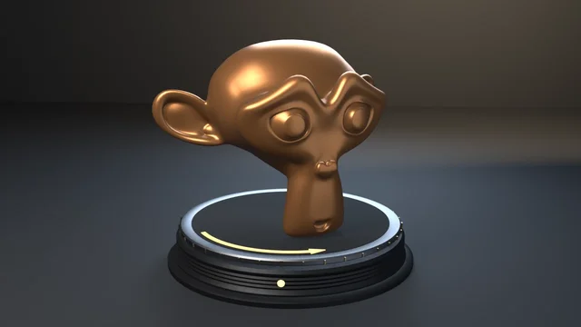
turntable
A slotted-actions Z-rotation turntable keyed through the cross-version channelbag path (get_channelbag_for_slot).
witnesses Slotted-actions boundary: ensure-helper channelbag on 5.x, strip.channelbag on 4.4/4.5.

gn-sdf-remesh
A Geometry Nodes SDF remesh (MeshToSDFGrid → GridToMesh at the SDF zero-level), with a Set Material node carrying the material through the remesh.
witnesses An SDF grid is meshed with Grid to Mesh, not Volume to Mesh; GN geometry needs Set Material or it renders untextured.
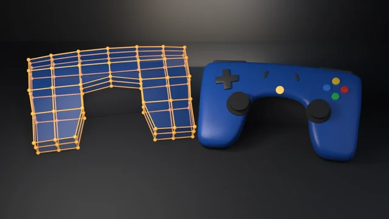
depsgraph-export
The depsgraph lifetime contract — evaluated_get().to_mesh() paired with to_mesh_clear() — measured against an OBJ export of the same object.
witnesses Exports ship evaluated geometry: the controller shell subdivides to exactly its Catmull-Clark closed form, and the exported vertex count equals the subsurf-applied count, strictly greater than the base mesh.
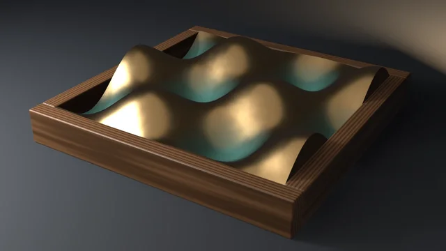
wave-displace
Bulk vertex IO at real scale — 9,409 vertices displaced into a standing wave with one foreach_get and one foreach_set, no per-vertex access.
witnesses The bulk path is correct, not just fast: the Z span matches the wave amplitude and every vertex matches the closed-form wave, so a stride bug in the flat buffer cannot hide.
driver-wave
A driver_namespace function driving sixteen organ-pipe heights through SCRIPTED drivers — the sine skyline of the pipe tops is entirely driver-evaluated.
witnesses Driven values appear after a view-layer update in two places that must agree: the evaluated copy and the original datablock the animation system flushes for display.
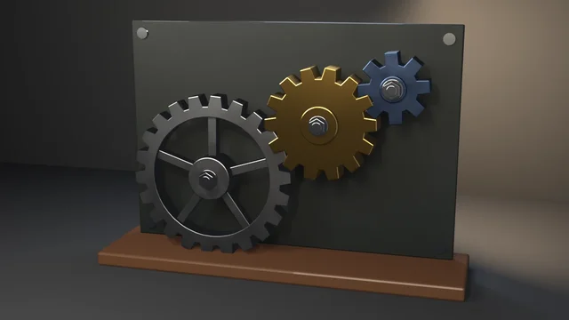
bmesh-gear
A 14-tooth gear built entirely with bmesh — profile ring, face, extrude — with bm.free() in a try/finally, exactly as the ownership contract demands.
witnesses Parametric bmesh topology is exactly predictable: verts, edges, and faces match their closed forms, and every edge borders exactly two faces (watertight).
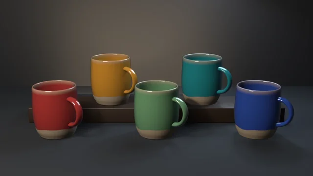
shader-node-group
One reusable shader group declared via tree.interface.new_socket, instanced in five materials with different Tint values — one dipped-glaze group, five stoneware mugs, five colors.
witnesses Grouping contract: interface sockets appear on every instance, all five materials share one group datablock (users == 5), and per-material parameters live on the group node, not inside the tree.
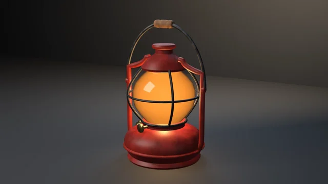
temp-override-join
Join seven lantern parts into one object under bpy.context.temp_override — the supported replacement for the removed context.copy() dict-pass form.
witnesses temp_override actually applies: join consumes all six sources, exactly one mesh remains, no geometry is lost, the five part materials merge into one slot each with every face still on its own material, and local Z spans foot to grip.
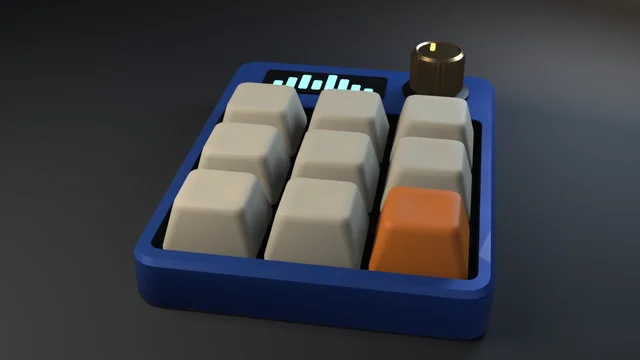
gn-instance-grid
A generative Geometry Nodes tree — Mesh Grid → Instance on Points (a modeled keycap via Object Info) → Realize Instances → Set Shade Smooth → Set Material — attached as a NODES modifier with no Group Input geometry.
witnesses Realized instances produce closed-form topology (9 keycaps × 121 = 1089 verts, 1089 faces), Set Material carries the keycap plastic, a position-field Set Material lands the accent on exactly one keycap, and the corner keycap sits at its closed-form grid coordinate.
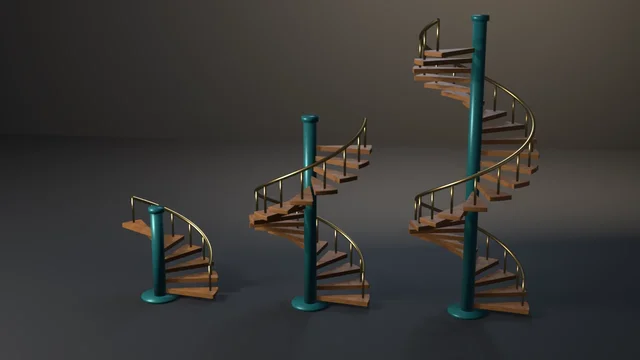
gn-modifier-inputs
Per-modifier Geometry Nodes Float inputs on a shared tree — 4.5/5.1 write mod[identifier], 5.2 writes mod.properties.inputs.Socket_1.value.
witnesses The 5.1 dict form raises TypeError on 5.2 rather than silently no-opping; RNA properties are AttributeError on 4.5. Readback and evaluated Z-extent match written heights 1/2/3, which the shared tree turns into 7/17/27 treads.
shape-key-blend
A relative Tall shape key that turns a squat ceramic jar into a trumpet vase — lifting and flaring the rim — authored via shape_key_add / key_blocks / .value and read back from the depsgraph-evaluated mesh.
witnesses Shape keys do not rewrite mesh.vertices: every evaluated vert matches basis + value × (key − basis), including the lifted, flared rim ring.
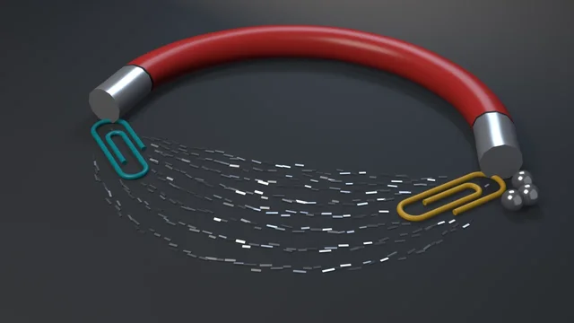
curve-bevel-arc
A beveled Bezier semicircle authored on bpy.types.Curve — splines.new('BEZIER'), bezier_points, bevel_depth, use_fill_caps — so the curve renders as a solid tube without a prior mesh conversion.
witnesses Curve tubes are curve datablocks: eight Bezier points, bevel_depth == 0.15, filled caps, and the evaluated mesh has deterministic topology (1044 verts, 1028 faces) resting on the floor.

compositor-glare
Bloom where it actually lives — a compositor Glare (Fog Glow) node fed by Render Layers, wired via scene.compositing_node_group on 5.x and scene.node_tree on 4.x, with the Glare node's legacy properties vs 5.x menu sockets.
witnesses scene.node_tree is gone in 5.x and EEVEE has no use_bloom on either side: the halo beyond the ring silhouette falls off strictly with the compositor on and is exactly zero with it off.
damped-track-aim
Aim constraints via the data API — Object.constraints.new('DAMPED_TRACK') with target and TRACK_Z, not bpy.ops.object.constraint_add in a headless loop. Gallery still: twelve spotlight heads on stands, all swung onto one glowing orb.
witnesses Every lamp head has one unmuted DAMPED_TRACK on the orb; evaluated local +Z (the lens) aligns toward the orb (dot ≥ 0.998). TRACK_TO stand-ins and flipped axes fail.

color-attribute-wheel
The modern color-attributes API — mesh.color_attributes.new() on the CORNER domain, filled by expanding per-vertex HSV across face corners with foreach_get/foreach_set, then wired into a shader Attribute node.
witnesses CORNER-domain attributes are sized to loop count, not vertex count; the check asserts the sizing, that active_color points at it, and that the Attribute node is actually linked to Base Color, not just present.

parent-inverse-orrery
Data-API parenting for a brass orrery — the keep-world idiom (child.parent = pivot; child.matrix_parent_inverse = pivot.matrix_world.inverted()) carrying arms, planets, and a two-level moon through spinning pivots.
witnesses Bare `.parent =` really does teleport the child; the idiom restores world position exactly; matrix_world stays stale until view_layer.update(); every orbit lands on its closed form.
grease-pencil-rosette
Grease Pencil v3's attribute-based API — layer → frames.new(1).drawing → add_strokes → per-point position/radius/opacity/vertex_color — drawing five nested neon rose curves.
witnesses The GPv3 address break: 4.5 keeps GPv3 at grease_pencils_v3 while grease_pencils is still legacy GPencil (frame.strokes, no .drawing); 5.x deletes legacy and GPv3 takes over the grease_pencils name. Point writes lazily materialize attribute layers, and every position round-trips through the raw POINT buffer.
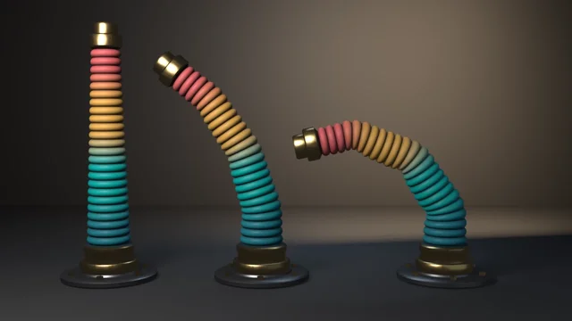
armature-bend
Rigging end to end in the data API — edit_bones chain construction, name-bound vertex groups with smoothstep blend zones, posing, and depsgraph evaluation — bending a ribbed bellows hose through rest, half, and full curl.
witnesses edit_bones exists only in edit mode (empty in object mode), vertex groups bind to bones strictly by name, and the armature modifier is exactly linear blend skinning: every evaluated vertex must equal Σ wᵢ·(pose_bone.matrix @ bone.matrix_local.inverted()) @ rest, root ring pinned, tip deflected — a straight tube fails.
text-version-stamp
The TextCurve data API — curves.new(type='FONT'), live body text from bpy.app.version_string, extrude and bevel_depth solids, and evaluated-mesh conversion — so every render self-documents which Blender produced it.
witnesses TextCurve solids are exactly predictable: evaluated z-extent = 2 × (extrude + bevel_depth), bevel widens the outline by 2 × bevel_depth, editing body regenerates geometry — and version_string is not bare semver on LTS ("4.5.11 LTS"), so parse bpy.app.version instead.
image-pixels-testcard
The Image pixel-buffer contract — a procedural broadcast test card written into bpy.data.images.new() with one pixels.foreach_set (589,824 floats), byte vs float_buffer storage, scale() reallocation, and the save() vs save_render() lifecycle.
witnesses pixels is always flat RGBA (channels == 4 even with alpha=False), byte storage quantizes at exactly ≤ 0.5/255 and strictly > 0, stale-size bulk reads raise after scale() — and save() silently flips source to FILE and drops the buffer, so later pixels reads come from whatever sits on disk (proven with an imposter file).
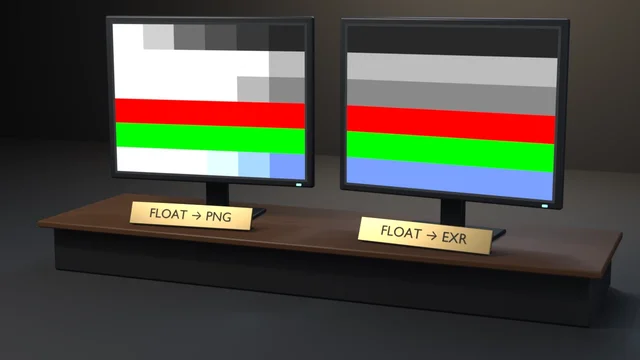
png-exr-alpha
Float-image PNG save trap — float_buffer=True Image.save() writes RGBA16 and unpremultiplies as if associated-alpha, clamping straight-authored dark values at low alpha to white (closed-form err 0.98 at RGB 0.02 / a=1/255).
witnesses float→PNG IHDR is RGBA16 and matches q16(min(1, c/q16(a))); OpenEXR round-trips within 1e-5; byte→PNG is straight RGBA8; EXR color_mode=RGB drops alpha to opaque.
uv-layer-grid
The UV-layer authoring hazard — bmesh.ops.create_grid(..., calc_uvs=True) is a silent no-op unless a UV layer already exists; without one an Image Texture samples texel (0,0) everywhere.
witnesses calc_uvs=True alone leaves 0 UV layers; pre-create + calc_uvs fills loops to the closed-form grid UVs ((x/size+1)/2, (y/size+1)/2) within 1e-6; explicit loop assignment is the calc_uvs-free fallback. The still is self-witnessing: the script re-reads its render and exits non-zero unless the hazard panel is one flat teal and the repaired panel a high-contrast checker.
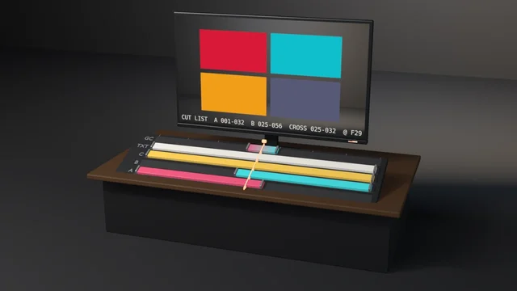
vse-cut-list
The sequencer API rename from 4.5 LTS to 5.x — strips (never .sequences), new_effect ending in length= vs frame_end=, and left_handle/right_handle/duration replacing the deprecated frame_final_*. A deterministic cut list — color programs, a clamped GAMMA_CROSS, a scene strip, a text strip — asserted before and after save/reload.
witnesses Each side hard-fails the other's spelling: TypeError on the wrong end kwarg, AttributeError on .sequences. The cross clamps to the source overlap, effect strips consume their inputs only when stacked above them, and a same-scene scene strip renders transparent.
gltf-export-roundtrip
A sci-fi supply crate exported to glTF and re-imported, verifying the round-trip against the depsgraph-evaluated mesh within float tolerances. Positions, loop normals, box-mapped UVs, and per-triangle material bindings must all survive; the on-disk JSON proves the +Y-up conversion and the V-flipped UV layout.
witnesses export_yup bakes (x, y, z) -> (x, z, -y) into the vertex data with no node rotation (probed identical on 4.5.11 and 5.1.2); export_apply ships the evaluated mesh, not the base cage; exporter/importer RNA is guarded so a future kwarg rename fails loudly.
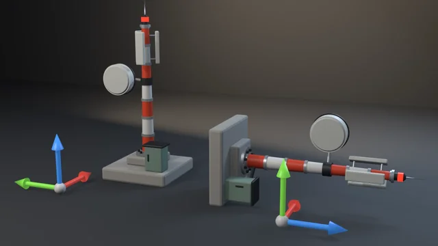
export-preset-axis
A radio mast exported under Unity and Godot glTF presets and re-imported, proving the two files have different vertex orientation
witnesses Unity export_yup=True round-trips standing (x,y,z); Godot export_yup=False reimports lying along -Y as (x,-z,y); --same-axis exits 9; exporter RNA is guarded so a future kwarg rename fails loudly
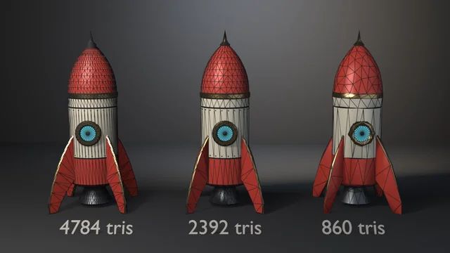
lod-decimate-chain
A retro rocket at LOD0/1/2 via the Decimate modifier evaluated through the depsgraph, with a wireframe of each evaluated mesh. The check proves the reduction is non-destructive, the triangle count hits ratio x base within bounds, and silhouette-critical dimensions survive.
witnesses Evaluated-vs-original: the depsgraph carries the reduction while obj.data keeps the closed-form counts. A stacked Decimate halves the effective ratio (caught); a fin extreme on an oblique plate corner is shaved at ratio 0.18 (caught).
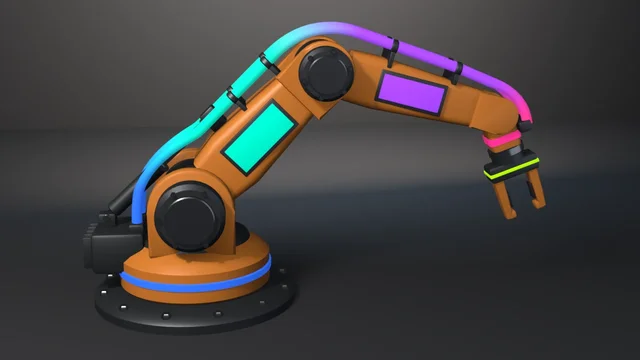
vertex-weight-limit
A rigged industrial robot arm pruned to the game-engine cap of four bone influences per vertex, through the data API. The check proves no vertex exceeds the cap, weights still sum to one, the pose survives pruning, and the modifier is still exact linear blend skinning.
witnesses Limit-total and normalize without bpy.ops: keep the top four groups, VertexGroup.remove the rest, renormalize. LBS is verified against the weights read back from the mesh's own deform layer, not the authoring function.
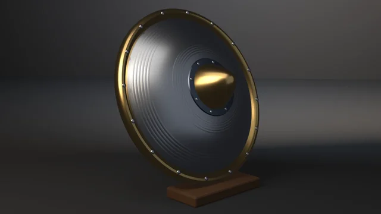
triangulate-tangents
A machined buckler verifying the tangent-space contract a game engine's normal mapping depends on. Deterministic triangulation, unit orthogonal tangent frames, and the edge/UV-delta formula matching mikktspace within welding tolerance.
witnesses calc_tangents aborts on any ngon; planar UVs on a cylindrical wall collapse tangents onto normals; a MeshUVLoopLayer handle held across calc_tangents dangles on 4.5 (471 phantom flips, silent exit 0) while the mikktspace math is byte-identical on both versions.
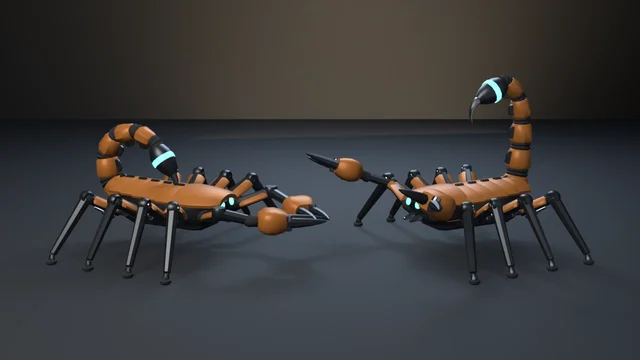
gltf-skin-roundtrip
A rigged mech scorpion exported to glTF with skins and re-imported, verifying the skinning contract the geometry round-trip left uncovered. Skeleton, weights, and deformation must all survive the format.
witnesses skins[0].joints names all 21 bones; JOINTS_0/WEIGHTS_0 per primitive with unit sums; every split copy's weights bit-exact on re-import; deformation matches within 6.0e-07. The mesh must be parented to the armature or the exporter binds by name.
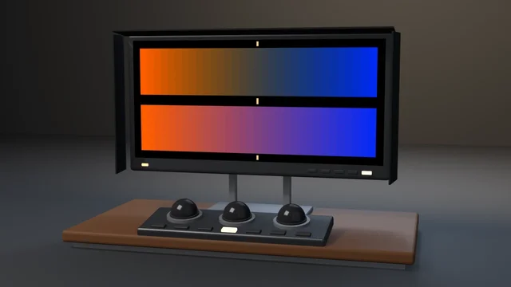
vse-gamma-cross
The GAMMA_CROSS fade is not the naive linear mix: it blends in a gamma-0.5 space, so the mid-cross dips below the sRGB lerp. Tiny per-frame renders are asserted against the closed form per frame.
witnesses out = ((1-t)*sqrt(A) + t*sqrt(B))^2 with t = (frame - start) / duration, never 1 inside the effect. The mid lerp deviation is 0.250; AgX-default sampling poisons the fit (Standard is mandatory).
light-link-studio
One key, one hero: a light linked to a receiver collection lights only the hero, proven by two pixel renders in one pass. Linked: 3.6x luminance ratio; unlinked in the same check: the decoy rises 233% while the hero holds at 0.3% drift.
witnesses The API is obj.light_linking on the light OBJECT (ld.light_linking is an AttributeError). Luminance is sampled at each sphere's projected center; EEVEE honors linking too (probe-measured 3.8x on 4.5.11 EEVEE Next and 5.1.2 EEVEE), Cycles pinned for deterministic samples.
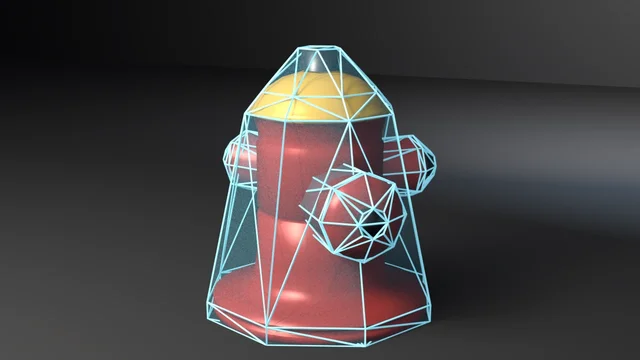
collision-hull-proxy
A fire hydrant street prop inside its compound collision shell: four convex pieces hulled by bmesh.ops.convex_hull from a coarse inflated cage. The dense render mesh is never hulled - its hull would measure 380 faces, over the 255-face per-piece engine budget. Closed-form plane tests prove containment, convexity, watertightness, outward winding, and Euler characteristic 2 per piece.
witnesses A hull of the dense render mesh measures 380 faces, over the 255-face per-piece budget - the cage is a coarser lathe with rings inflated by sec(pi/n) so each cage ring circumscribes its render ring exactly (containment 4.4e-08). Proud details cost cage rows; concave grooves are free under the hull. Piece budgets: body 70, caps 60+60+60, compound 250.
custom-normals-shade
A jerry can prop shaded three ways to prove the post-4.1 shading contract: hard edges are mesh data, landing exactly where the dihedral crosses. Face smooth flags plus a sharp_edge attribute, verified against an independently recomputed dihedral test, and per-loop custom normals surviving depsgraph evaluation within their int16 storage quantization (3.904e-05 over 8196 loops, not float-exact).
witnesses use_auto_smooth, use_custom_normals and calc_normals are AttributeError on BOTH 4.5 LTS and 5.1 - AI code still emits them. The legacy shade_auto_smooth operator CANCELS headless on 4.5 (asset load never finishes; mesh untouched; no exception) while 5.1 FINISHES with the Smooth by Angle NODES modifier. By-angle sharp sets match the independent dihedral recompute exactly (1304 of 4738 edges over 3 meshes).
sky-texture-sun-elevation
World ShaderNodeTexSky driving Background Color — the sky contract across 4.5 LTS and 5.1. sky_type is NISHITA on 4.5 and MULTIPLE_SCATTERING on 5.1 (NISHITA gone); dust_density exists only on 4.5 (aerosol_density on 5.1). Two tiny Cycles OPEN_EXR zenith probes prove sun_elevation 8 deg to 55 deg brightens zenith (rise 2.25x on 5.1.2, 1.50x on 4.5.11, gate >= 1.25).
witnesses AI code still assigns sky_type='NISHITA' and dust_density on 5.1 — both are wrong (NISHITA removed; dust_density is AttributeError; use MULTIPLE_SCATTERING + aerosol_density). A near-black Background Strength alone is not a sky: Sky must link into Background Color. Elevation that does not brighten zenith fails the rise gate.
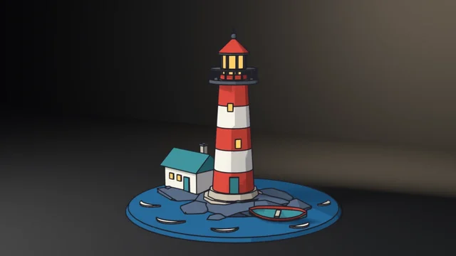
gp-lineart-contour
Grease Pencil LINEART modifier ink via the depsgraph on a cel-shaded lighthouse diorama. source_object is load-bearing (clear yields 0 strokes); every edge type off yields 0; the drawing is 255 strokes / 1393 points on 4.5.11, 5.1.2 and 5.2.1, gated above the count left when any one of contour, crease, material-border or intersection edges is dropped. Stroke width: thickness exists on 4.5, AttributeError on 5.1 — portable path is radius.
witnesses AI code still sets LINEART.thickness on 5.1 (AttributeError) or hand-draws strokes / enables Freestyle instead of modifiers.new(..., 'LINEART'). Clearing source_object or leaving every edge type off silently yields an empty drawing — the check proves both failure modes and recovery.
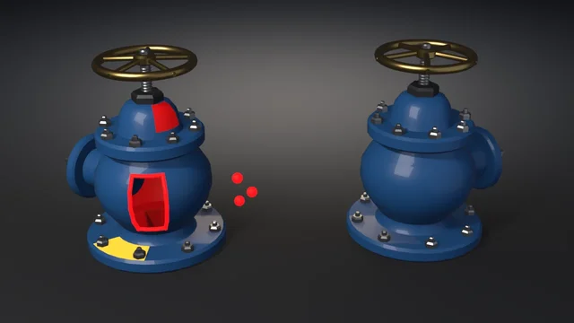
mesh-hygiene-audit
Engine-ingest mesh hygiene on every part of a flanged street valve: no ngons, no loose verts, manifold edges, no zero-area faces, contiguous and outward winding, Euler V-E+F==2 on the body casting. A dirty copy carries a hole, a flipped patch, an ngon and loose verts, each marked from live audit incidence; the paint glows red wherever the renderer sees a back face.
witnesses Pipelines that skip topology gates ship open boundaries, flipped patches, ngons, loose verts or stray shells into engine ingest. The still shows the first four on a dirty copy; zero-area faces and a buried second shell remain check-only.
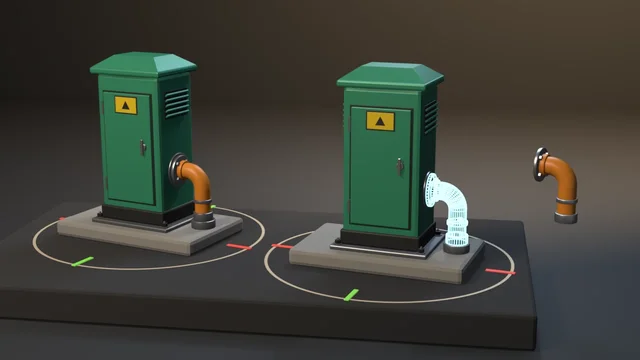
prop-origin-transform
Street pedestal origin-to-base-center + data-API scale apply + matrix_parent_inverse for a flanged conduit elbow. After bake: scale (1,1,1), local min.z==0, world AABB unchanged. Bare parent throws the elbow off its mount; MPI keeps it seated.
witnesses Bare child.parent = parent teleports accessories off their mounts; skipping view_layer.update() before matrix_world, or leaving non-uniform scale / centered origin, breaks engine ingest placement.
soccer-ball-goldberg
A soccer ball as a Goldberg polyhedron: a bmesh icosphere truncated at 1/3 per edge, faces ordered by link-topology walks, panels bound by face vertex count.
witnesses Goldberg invariants are closed forms — counts, degree 3, uniform edges, planar faces, one circumsphere — and panels bind by vertex count, never enumeration order.
car-mirror-symmetry
A stylized hatchback lofted as one half (52 stations, 13-point rings) and completed by the Mirror modifier, evaluated through the depsgraph. Wheels, lamps, grille, door mirrors and handles mirror about object origins parked on the symmetry plane; the grille is authored as a half and welded on it.
witnesses Mirror is a modifier, not applied data: the original keeps the authored half while the evaluated mesh is the welded, watertight, exactly symmetric whole.
attribute-domain-shear
POINT vs CORNER color-attribute domains on a shared-vertex fan: CORNER stays exact per face while a naive per-wedge POINT loop shears to the last write at the hub. A striped parasol keeps crisp stripes under CORNER and smears, with one panel turned the wrong color, under POINT; the measured shear equals the palette closed form.
witnesses Authoring per-face colors into a POINT-domain attribute overwrites shared vertices once per neighbor; the last write wins and intended colors shear across every shared vertex.
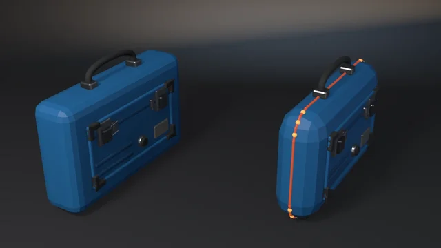
degenerate-bevel-weld
Bevel offset >= half the min box dimension collapses the band into zero-area faces — and they ship: a stdlib GLB re-parse counts the degenerate triangles crossing the export boundary. Two rugged cases whose shells are the check's meshes: flat end panel versus a rolled knife ridge, the collapsed seam traced hot from live mesh data.
witnesses At offset == min_dimension/2 the bevel band pinches to exactly 12 zero-area faces (4 edges x 3 segments); 32 degenerate triangles cross into the exported GLB, waiting for any merge-by-distance to weld them.
modular-kit-snap
A tiling corridor kit whose open-end boundary verts snap to the tile grid, so instances at 4 m multiples join with zero gap or overlap.
witnesses 16 boundary verts on x∈{0,4} within 1e-6 m, linked-duplicate joint deviation 0.0, bbox == declared tile; unsnapped probe fails at 3e-3 m.
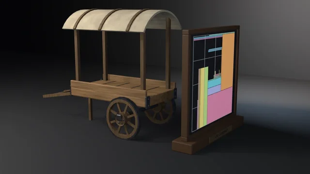
lightmap-uv-channel
A market cart carrying the two-channel UV contract for baked lighting: UV0 untouched, UVLight packed with no overlaps and a respected margin.
witnesses Per-part UVMap/UVLight with active vs active_render pinned (ops clear both flags), UV0 drift 0.0, 3680 islands with 0 SAT overlaps, min island distance 0.00401.
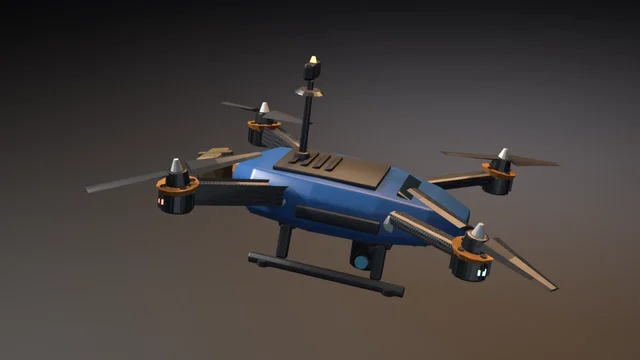
socket-attach-points
A survey drone whose named SKT_ empties are the spawn contract: modules parented with an identity local transform seat exactly on their mount pads.
witnesses 7 socket world matrices within 1.788e-07 of the authored transform, socket +Z == the pad's Newell normal (1.794e-07), seating offset 0.0; the no-parent-inverse probe jumps 0.690128 m.
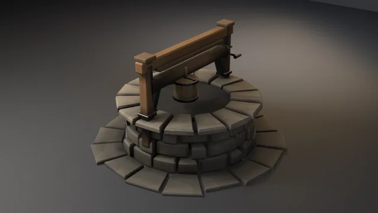
vertex-color-ao
A stone well carrying baked ambient occlusion in a colour attribute, with the bake held to the closed-form hemisphere integral rather than to a captured value.
witnesses Integrator matches 1 - 0.5(1 - 1/sqrt(1+k^2)) to 6.760e-04, unoccluded plate exactly 1.0, FLOAT_COLOR exact vs BYTE_COLOR sRGB-quantised (model agreement 3.189e-07), evaluated deviation 0.0.
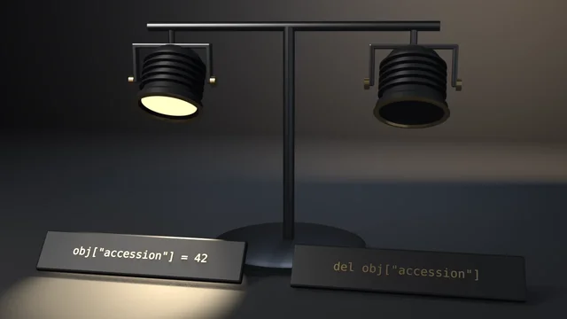
cross-version-property-delete
Custom ID properties are removed with del, not property_unset. The IDs are built through bpy.data.objects.new so the check does not depend on active_object.
witnesses Factory-empty has no active_object; property_unset raises TypeError and leaves the key; del removes it (clear_has=False). --skip-delete and --unset-instead exit 7.
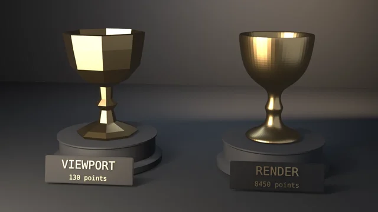
usd-export-evaluation-mode
The USD exporter evaluation_mode chooses viewport versus render modifier quality. TESSELLATE makes the split observable; BEST_MATCH writes the cage and the mode is silent.
witnesses TESSELLATE+VIEWPORT writes 26/24; TESSELLATE+RENDER writes 98/96 subdivisionScheme=none; BEST_MATCH writes the 8-vert catmullClark cage. --evaluation-mode VIEWPORT and --subdivision BEST_MATCH exit 4.
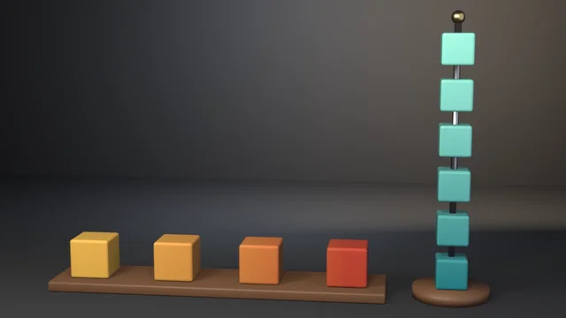
gn-zone-iterate
Repeat Zone and For Each Element only iterate after pair_with_output. Evaluated cube counts follow 8 times (1+N) and 8 times P, not tree structure.
witnesses Repeat 32/24 verts/faces with X-centers at k*1.2; For Each 48/36 with Z-centers at i*0.6+0.21. Unpaired evaluates empty; For Each main Geometry passthrough is 6 verts.
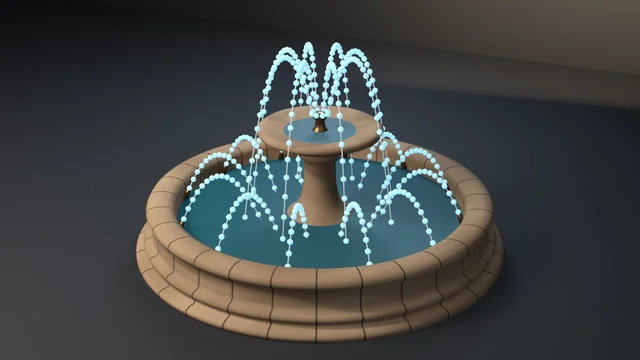
gn-sim-fountain
A Simulation Zone only advances one step per consecutive frame_set. A direct jump to frame N runs a single step, and only a bake gives random access to the stepped state.
witnesses 24 stepped frames match p0 + v0 t - g t^2/2 within 6.6e-7 m. An unbaked jump 1->25 runs one step and sits 1.68-2.42 m off the arc; calculate_to_frame returns PASS_THROUGH headless; after a bake, random-access frames match within 5.6e-7 m.
bake-normal-high-to-low
A collapse-decimated hatch plate receiving a Cycles cage-baked tangent normal map from a ribbed high-poly source
witnesses Statistical gates not byte-identity: detail frac 0.7211 / MAD 0.09356 vs flat 0.0000 / 0.00277; --flat-source exits 5; type=NORMAL not bake_type; RNA identical on 4.5.11, 5.1.2, 5.2.1
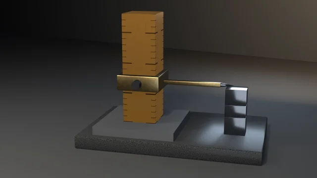
gn-socket-rename
Compare and Random Value socket identifiers collapsed onto reused names in 5.2; enabled-name lookup wires on 4.5, 5.1, and 5.2
witnesses A_INT and Min_001 present on 4.5.11 and 5.1.2, absent on 5.2.1. --legacy-ids exits 5 only on 5.2. Evaluated 16 verts and gauge_h 1.80 on eight column verts; the still draws the column graduations from gauge_h, so an unwired Random Value renders a blank column
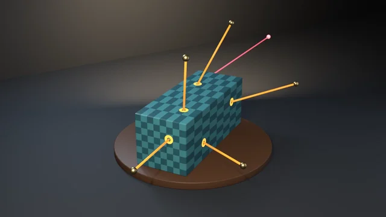
ray-cast-space
Object.ray_cast is object-local while Scene.ray_cast is world space: rays mapped through matrix_world.inverted() (directions by its 3x3 only) hit the same points both ways, and raw world coords handed to Object.ray_cast miss.
witnesses Five closed-form rays on a translated, Z-rotated, non-uniformly scaled block: Scene.ray_cast hits each world point and normal exactly; Object.ray_cast fed matrix_world.inverted() coordinates hits the same polygons, and mapped back lands within 5e-7 m; world coords fed to Object.ray_cast land 0.287 m or more off. --world-to-object exits 4 (1.125 m error).
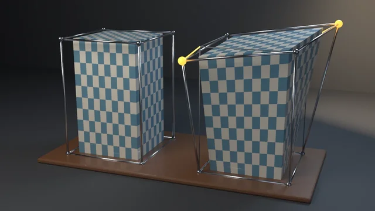
lattice-deform
A 2x2x2 Lattice modifier set to KEY_LINEAR on all three axes, with two top control points moved through LatticePoint.co_deform, read back through the depsgraph (evaluated_get, to_mesh, to_mesh_clear).
witnesses Linear lattice deform is exact trilinear interpolation: all 602 evaluated verts land on the closed-form blend of the eight co_deform corners (max error 5.6e-7 through a translated, non-uniformly scaled lattice), the undeformed lattice is the identity, and --bspline (the default interpolation) misses by 0.2145 and exits 4.

shipping-crate
A procedural shipping crate through UVs, bake, LOD, collider, and Unity glTF, asserting recomputed budgets rather than an API contract.
witnesses Recomputed: 3388 tris, two materials with 1170 wood and 904 metal faces, UVs in 0..1 with zero AABB overlap, outer AABB 1.146×0.726×0.612 m, grounded zmin, 3 skids, handle-end and slat-post join 0, mesh hygiene all zero, LOD ratios in band (5.2 COLLAPSE leaner on LOD2), convex collider 116 tris, non-empty glTF. --skip-decimate exits 9; --stray-vert 15; --lift-z/--short-skids 16; --float-handle 17; --omit-slats 18.

stone-well
A procedural stone well through UVs, bake, LOD, collider, and Unity glTF, asserting recomputed budgets rather than an API contract.
witnesses Recomputed: 9380 tris, three materials with face floors, UVs in 0..1 with zero AABB overlap, outer AABB 1.312×1.312×1.761 m, LOD ratios in band, convex collider 346 tris, hygiene zero (loose, non-manifold, doubles, n-gons), zero coplanar cross-shell face pairs, all 12 bottom-course stones on the floor, each post tenoned 18 mm into the measured coping and standing under a roof hip corner, the bucket hanging 0.10 m clear of the coping, grounded zmin, non-empty glTF. --stand-posts exits 15 on the z-fight budget; --float-stone exits 16 on the named-support budget; --shallow-tenon and --drop-bucket exit 18; --turn-posts exits 19 on post placement; --skip-decimate exits 9 on the LOD1 ratio budget; --lift-z exits 16 on the grounded budget.

wooden-barrel
A procedural wine-cask with boarded, croze-seated heads and chord-lofted hoops through UVs, bake, LOD, collider, and Unity glTF, asserting recomputed budgets rather than an API contract.
witnesses Recomputed: 7312 tris, two materials with 2584 wood and 1440 metal faces, UVs in 0..1 with zero AABB overlap, outer AABB 0.722×0.714×0.880 m, 20 grounded staves, hoop bite 0.003 m, head-croze gap 0.007 m, four boards per head with 1.5 mm seams, LOD ratios in band, convex collider 238 tris, non-empty glTF. --skip-decimate exits 9; --round-band exits 18 on the hoop-seat budget; --one-piece-head exits 17 on the head-board budget.

campfire
A procedural campfire through UVs, bake, LOD, collider, and Unity glTF, asserting recomputed budgets rather than an API contract.
witnesses Recomputed: 2760 tris, three materials with 216 wood, 48 ash and 1416 stone faces, UVs in 0..1 with zero AABB overlap, outer AABB 0.802×0.802×0.404 m, LOD ratios in band, convex collider 162 tris, hygiene 0, 14 grounded bottom stones, teepee kiss 0.00034 m, course seat 0, stone variation 0.01269 m, non-empty glTF. --skip-decimate exits 9; --stray-vert 15; --lift-z/--short-stones 16; --float-logs 17; --gap-courses 18; --uniform-stones 20.
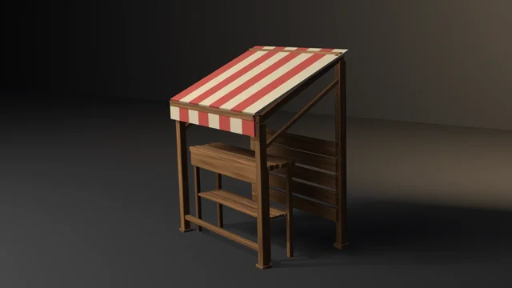
market-stall
A procedural timber market stall through UVs, bake, LOD, collider, and Unity glTF, asserting recomputed budgets rather than an API contract.
witnesses Recomputed: 4324 tris, three materials with 34 faces per awning stripe slot, UVs in 0..1 with zero AABB overlap, outer AABB 1.389×1.011×1.740 m, grounded zmin, 4 wrap feet, brace-counter overlap 0, both side braces seated 0.0418 m into their posts, awning seat 4 mm, post plumb 0, LOD ratios in band, convex collider 58 tris, non-empty glTF. Hygiene all zero. --skip-decimate exits 9; --stray-vert 15; --lift-z/--short-feet 16; --low-brace/--short-brace 17; --float-awning 18; --rake-posts 19.
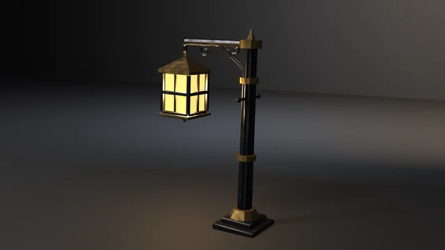
street-lantern
A procedural hanging street lantern through UVs, bake, LOD, collider, and Unity glTF, asserting recomputed budgets rather than an API contract.
witnesses Recomputed: 3338 tris, three materials with 1530 metal, 24 glass and 209 brass faces, UVs in 0..1 with zero AABB overlap, outer AABB 0.300×0.786×1.287 m, zmin 0, hygiene 0, brace BVH gap 0, brace ends 13 mm into the post and the arm, hanger-roof gap −1 mm, post 0.100×1.120 m plumb 0, LOD ratios in band (5.2 COLLAPSE 2 tris leaner on LOD2), convex collider 78 tris, non-empty glTF. --skip-decimate exits 9; --stray-vert 15; --lift-z 16; --float-brace 17; --sink-arm 18; --rake-post 19; --shallow-brace 20.
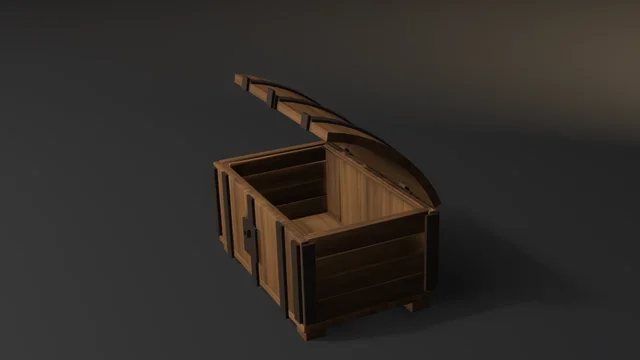
treasure-chest
A procedural iron-bound chest with a lofted barrel-vault lid, U-wrap bands, and hinge knuckles through UVs, bake, LOD, collider, and Unity glTF, asserting recomputed budgets rather than an API contract.
witnesses Recomputed: 3852 tris, two materials with 1608 wood and 318 metal faces, UVs in 0..1 with zero AABB overlap, outer AABB 0.764×0.542×0.691 m, LOD ratios in band, convex collider 176 tris, non-empty glTF. Hygiene all zero, four feet at zmin 0, lid-knuckle to hinge barrel 7 mm, band-wall gap 0. --float-hinge exits 17 on the hinge join; --narrow-bands exits 18 on the band seat.
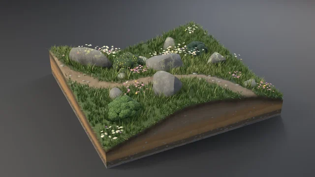
terrain-scatter
A Geometry Nodes hill tile with embedded, varied stone scatter through UVs, bake, LOD, collider, and Unity glTF, asserting recomputed budgets rather than an API contract.
witnesses Recomputed: 2398 tris, two materials with 720 stone faces, UVs in 0..1 with zero AABB overlap, outer AABB 1.800x1.800x0.570 m, grounded zmin, 9 stones of >=80 faces each sealed into the ground in 8/8 sectors, footprint ratio 9.8, rim tilt step 33.5 deg, no stone pairs overlapping, LOD ratios in band, convex collider 36 tris, hygiene zero, non-empty glTF. --skip-decimate exits 9; --stray-vert 15; --lift-z 16; --poke-rock 17; --float-rocks 18; --box-rocks 19; --pile-rocks 20; --perch-rocks 21; --uniform-rocks 22; --sharp-rim 23.
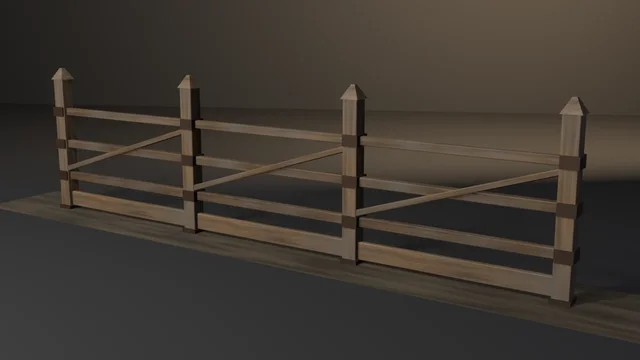
fence-kit
A procedural post-and-rail fence section that fits its 1.60 m tile, with one-shell iron bands and a board brace housed in both posts, through UVs, bake, LOD, collider, and Unity glTF, asserting recomputed budgets rather than an API contract.
witnesses Recomputed: 1012 tris, two materials with 116 metal and 390 wood faces, UVs in 0..1 with zero AABB overlap, outer AABB 1.596×0.134×1.232 m inside the 1.60 m tile, grounded zmin, 2 iron shoes, brace housed 12 mm in both posts and bearing 2 mm on the middle rail, rail-to-post gap 0.93 mm, rail span 1.362 m, LOD ratios in band (5.2 COLLAPSE leaner on LOD2), convex collider 24 tris, hygiene all zero, non-empty glTF. --skip-decimate exits 9; --stray-vert 15; --lift-z/--short-shoes 16; --short-brace 17; --gap-rails 18; --long-rails 19; --float-brace 20; --wide-tile 21.
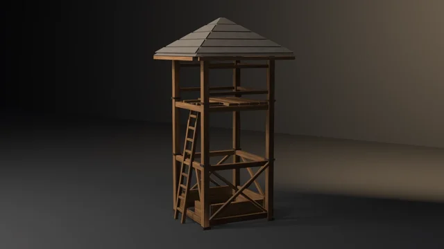
watchtower
A procedural timber watchtower through UVs, bake, LOD, collider, and Unity glTF, asserting recomputed budgets rather than an API contract.
witnesses Recomputed: 6840 tris, three materials with 300 metal and 126 roof faces, UVs in 0..1 with zero AABB overlap, outer AABB 1.594×1.594×2.973 m, grounded zmin, 4 iron shoes, rail engage 18 mm, all four side rails tenoned at both ends, both joists bearing 31 mm into deck girts, collar standoff 2 mm, post plumb 0, LOD ratios in band (5.2 COLLAPSE leaner on LOD2), convex collider 150 tris, non-empty glTF. Hygiene all zero. --skip-decimate exits 9; --stray-vert 15; --lift-z/--short-shoes 16; --short-rails/--open-sides/--short-joists 17; --float-band 18; --rake-posts 19.
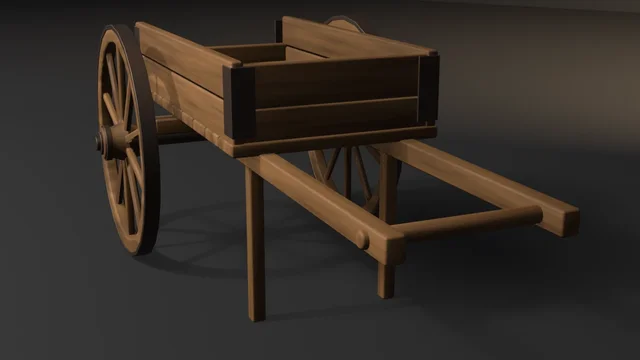
cart
A procedural two-wheel handcart through UVs, bake, LOD, collider, and Unity glTF, asserting recomputed budgets rather than an API contract.
witnesses Recomputed: 5284 tris, two materials with metal and wood face floors, UVs in 0..1 with zero AABB overlap, outer AABB 1.580×0.842×0.640 m, LOD ratios in band, convex collider 192 tris, hygiene zero (loose, non-manifold, doubles, n-gons), zero coplanar cross-shell face pairs, both tyres and both prop legs grounded, two wall boards per side with 3 mm seams, tyre seat depth in band over 48 angular stations, every shell in one BVH-contact assembly, the two wheels mirrored within 5e-5 m, no unchamfered right-angle edge, 17.45 bake texels per UV cell, non-empty glTF. --flush-tyre exits 15 on the z-fight budget; --float-wheel and --short-props exit 16 on the named-support budget; --wide-seams exits 17 on the board seams; --sink-tyre exits 18 on the tyre seat band; --lift-bed exits 18 on the one-assembly budget; --skew-wheel exits 19 on the wheel mirror; --sharp-bar exits 20 on edge treatment; --low-bake exits 21 on texel density; --skip-decimate exits 9 on the LOD1 ratio budget; --lift-z exits 16 on the grounded budget.
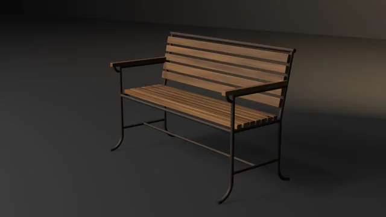
park-bench
A procedural wrought-iron park bench whose legs are each one bent bar from scroll toe to reclined back, through UVs, bake, LOD, collider, and Unity glTF, asserting recomputed budgets rather than an API contract.
witnesses Recomputed: 3272 tris, two materials with 1008 metal and 756 wood faces, UVs in 0..1 with zero AABB overlap, outer AABB 1.295×0.632×0.887 m, grounded zmin, 4 named toes, 4 legs each one bar from toe to seat, back reclined 12°, 28 slat and armrest bites of at least 2.0 mm, stretcher gap 1.1 mm, seat span 1.272 m, LOD ratios in band, convex collider 64 tris, hygiene zero, non-empty glTF. --skip-decimate exits 9; --stray-vert 15; --lift-z/--short-feet 16; --float-stretcher 17; --gap-slats 18; --narrow-seat/--upright-back 19; --float-slats 20; --split-feet 21.
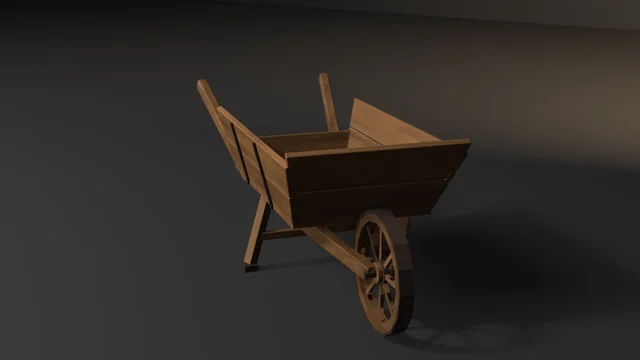
wheelbarrow
A procedural wooden wheelbarrow through UVs, bake, LOD, collider, and Unity glTF, asserting recomputed budgets rather than an API contract.
witnesses Recomputed: 2440 tris, two materials with 1085 wood and 214 metal faces, UVs in 0..1 with zero AABB overlap, outer AABB 1.563x0.594x0.577 m, zmin 0, hygiene 0, both shafts one timber from grip to axle, tray flared 15 deg and raked 30 deg, wall-floor seat 8 mm, spoke clearance 52 mm, two boards per side and front wall with 2 mm seams measured in the wall's plane, LOD ratios in band (5.2 COLLAPSE leaner on LOD2), convex collider 80 tris, non-empty glTF. --skip-decimate exits 9 on LOD1; --stray-vert exits 15 on hygiene; --lift-z / --short-legs exit 16 on grounded; --fat-spokes / --float-walls / --wide-seams exit 17 on joint fit; --pipe-rim exits 18 on tread aspect; --split-shafts exits 20 on shaft runs; --box-tray exits 21 on tray flare.
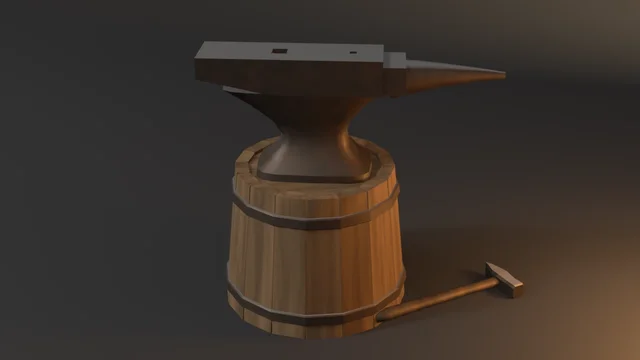
anvil
A procedural blacksmith anvil on a timber stump through UVs, bake, LOD, collider, and Unity glTF, asserting recomputed budgets rather than an API contract.
witnesses Recomputed: 3168 tris, two materials with 1040 wood and 912 metal faces, UVs in 0..1 with zero AABB overlap, outer AABB 0.621×0.414×0.569 m, LOD ratios in band, convex collider 134 tris, hygiene 0, 16 grounded staves, hoop bite 0.003 m, foot-on-head gap 0.003 m, waist corner reach 0.8572, non-empty glTF. --skip-decimate exits 9; --stray-vert 15; --lift-z/--short-staves 16; --float-anvil 17; --round-band 18; --round-waist 19.
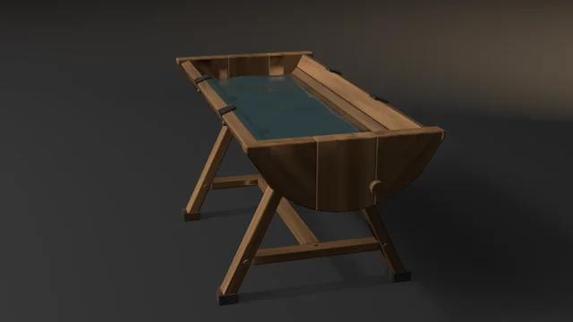
water-trough
A procedural watertight water trough through UVs, bake, LOD, collider, and Unity glTF, asserting recomputed budgets rather than an API contract.
witnesses Recomputed: 3316 tris, three materials with 1482 wood, 156 metal and 29 water faces, UVs in 0..1 with zero AABB overlap, outer AABB 1.093x0.552x0.5055 m, zmin 0, four shoes planted, each end three lapped boards, end rim span 21 mm, strap BVH gap 0, water-hull gap 2.6 mm, water contained on 66 of 66 rays, hull 1.045x0.466 m, LOD ratios in band, convex collider 68 tris, non-empty glTF. --skip-decimate exits 9; --stray-vert 15; --lift-z/--short-legs 16; --box-ends 17; --float-strap/--open-ends 18; --narrow-hull 19; --slab-ends 20.
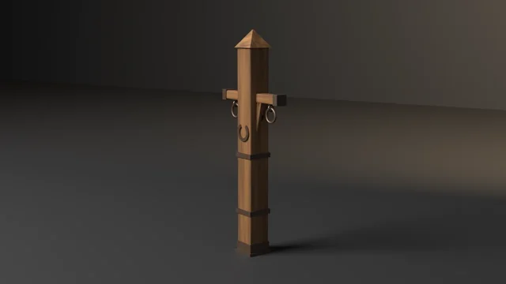
hitching-post
A procedural hitching post (eaved cap, one rail, cup shoe, rings hung through eyes, a face-nailed horseshoe) through UVs, bake, LOD, collider, and Unity glTF, asserting recomputed budgets rather than an API contract.
witnesses Recomputed: 1852 tris, two materials with 114 wood and 828 metal faces, UVs in 0..1 with zero AABB overlap, outer AABB 0.500×0.149×1.246 m, zmin 0, hygiene and coplanar pairs 0, post seated at z 0.010, ring centerline error 0, bands 6.5 mm proud of the post, horseshoe biting 1.5 mm and 7.5 mm proud, LOD ratios in band, convex collider 80 tris, non-empty glTF. --skip-decimate exits 9; --stray-vert and --twin-sole exit 15; --lift-z exits 16; --clip-ring, --sunk-bands and --float-horseshoe exit 18; --short-post exits 19.
grindstone
A procedural grindstone on a timber trestle through UVs, bake, LOD, collider, and Unity glTF, asserting recomputed budgets rather than an API contract.
witnesses Recomputed: 1668 tris, three materials with 400 wood / 240 stone / 364 metal faces, UVs in 0..1 with zero AABB overlap, outer AABB 0.722×0.419×0.610 m, zmin 0, hygiene 0 including zero coplanar cross-shell pairs, four shoes planted, trough seated in the sills and biting both stretchers 4 mm, stone dip 24 mm, no unchamfered right-angle edge, 29.44 bake texels per UV cell, LOD ratios in band, convex collider 304 tris, non-empty glTF. --skip-decimate exits 9 on LOD1; --stray-vert / --flush-shoes exit 15 on hygiene; --lift-z / --short-legs exit 16 on grounded; --float-crank / --float-legs exit 17 on joint fit; --no-dip / --narrow-trough / --low-stretchers exit 18 on seat; --sharp-handle exits 20 on edge treatment; --low-bake exits 21 on texel density.
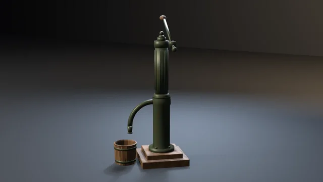
hand-pump
A procedural village hand pump whose gooseneck is a 6-gon tube from the lower-column radius, through UVs, bake, LOD, collider, and Unity glTF, asserting recomputed budgets rather than an API contract.
witnesses Recomputed: 1064 tris, two materials with 564 metal and 144 wood faces, UVs in 0..1 with zero AABB overlap, outer AABB 0.610×0.382×1.052 m, grounded zmin, spout-to-column gap 2.7 mm, flange-to-plinth gap 6.0 mm, column radius 62 mm, LOD ratios in band, convex collider 114 tris, hygiene all zero, non-empty glTF. --skip-decimate exits 9; --stray-vert 15; --lift-z 16; --float-spout 17; --float-flange 18; --skinny-col 19.
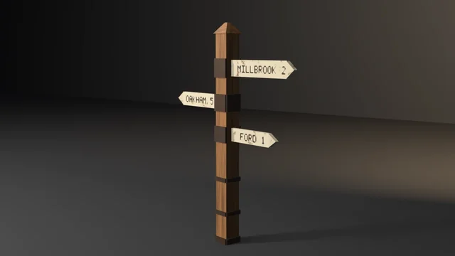
signpost
A procedural timber fingerboard signpost through UVs, bake, LOD, collider, and Unity glTF, asserting recomputed budgets rather than an API contract.
witnesses Recomputed: 432 tris, three materials with 126 metal, 33 board and 60 wood faces, UVs in 0..1 with zero AABB overlap, outer AABB 1.260×0.142×1.551 m at zmin 0, LOD ratios in band (5.2 COLLAPSE leaner on LOD1/LOD2), convex collider 56 tris, non-empty glTF. Hygiene all zero. Board-to-post gap 5 mm, strap gap 3 mm, board AABB Y 28 mm. --skip-decimate exits 9; --stray-vert 15; --lift-z / --short-shoe 16; --gap-board 17; --float-strap 18; --yaw-boards 19.
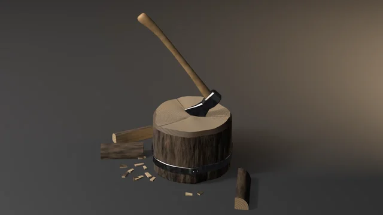
chopping-block
A procedural log-round chopping block with a riveted iron hoop and a felling axe buried in the sawn face, through UVs, bake, LOD, collider, and Unity glTF, asserting recomputed budgets rather than an API contract.
witnesses Recomputed: 1816 tris, four materials with 180 bark / 216 grain / 412 metal / 176 haft faces, UVs in 0..1 with zero AABB overlap, outer AABB 0.526 x 0.526 x 1.006 m, LOD ratios in band, convex collider 538 tris, non-empty glTF. Hygiene: zero non-manifold edges, loose geometry, doubles, zero-area faces, n-gons and coplanar disjoint face pairs, grounded at zmin 0, log plumb to 1e-7, oval haft 1.35 wide-to-thick. Joint fit: six shells, 13.5 mm haft clearance in the eye, 78.7 mm bit bury, hoop biting 3.7-4.2 mm into the log on every segment, two lap rivets seated 1.50 and 1.54 mm. --fat-haft exits 17 on eye clearance; --round-band and --float-rivets exit 18 on their seats; --round-haft exits 19 on the haft section.
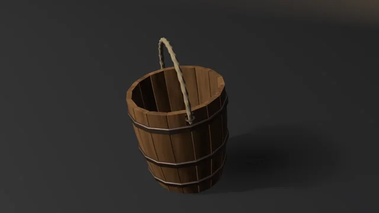
wooden-bucket
A procedural coopered pail with a boarded, croze-seated floor, chord-lofted hoops, and a three-strand rope bail through the ear rings through UVs, bake, LOD, collider, and Unity glTF, asserting recomputed budgets rather than an API contract.
witnesses Recomputed: 5458 tris, three materials with 1448 wood, 1020 metal, and 486 rope faces, UVs in 0..1 with zero AABB overlap, outer AABB 0.396×0.346×0.534 m, 16 grounded staves, hoop bite 0.0025 m, bail-ear gap 0.0011 m, three bottom boards, no rope vertex inside an ear plate, LOD ratios in band, convex collider 276 tris, non-empty glTF. --skip-decimate exits 9; --float-handle exits 17 on the bail-ear budget; --sunk-rope exits 17 on the rope-clearance budget.
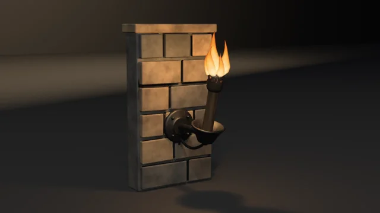
wall-torch
A procedural wall-mounted torch sconce: an iron plate bolted to the stone face, a level arm, an open cup holding a leaning haft with a pitch wrap and upright flames, through UVs, bake, LOD, collider, and Unity glTF, asserting recomputed budgets rather than an API contract.
witnesses Recomputed: 2004 tris, five materials with 540 stone, 318 metal, 50 wood, 180 flame and 60 pitch faces, UVs in 0..1 with zero AABB overlap, outer AABB 0.304×0.322×0.485 m at zmin 0, LOD ratios in band, convex collider 116 tris, non-empty glTF. Hygiene all zero. Arm level 0.000°, plate 13 mm proud of the stones and 3 mm into them, arm-to-cup gap 0.07 mm, plaque width 0.280 m, bake 27.7 texels per UV cell. --skip-decimate exits 9; --stray-vert 15; --lift-z 16; --float-arm 17; --float-plate 18; --skinny-plaque 19; --droop-arm 20; --sink-plate 21; --low-bake 22.
tavern-stool
A procedural tavern stool with a lathed seat, turned splayed legs, staggered stretchers, and iron ferrules gripping each leg on its own axis over a level tread, through UVs, bake, LOD, collider, and Unity glTF, asserting recomputed budgets rather than an API contract.
witnesses Recomputed: 3040 tris, two materials with 1168 wood and 576 metal faces, UVs in 0..1 with zero AABB overlap, outer AABB 0.341×0.341×0.470 m, LOD ratios in band, convex collider 468 tris, non-empty glTF. Hygiene all zero, four treads at zmin 0, stretcher-leg gap 0, ferrule grip 1.20 mm on each leg's axis, leg ends 1.1 mm above their treads, bake 22.4 texels per UV cell. --float-stretchers exits 17; --pipe-ferrule 18; --sink-legs 20; --low-bake 21.
iron-cauldron
A procedural hanging iron cauldron with a round-bellied pot, a bail threaded through flat ear rings, and a timber tripod through UVs, bake, LOD, collider, and Unity glTF, asserting recomputed budgets rather than an API contract.
witnesses Recomputed: 3664 tris, two materials with 224 wood and 1768 metal faces, UVs in 0..1 with zero AABB overlap, outer AABB 0.987×0.961×0.860 m, pot–leg clearance 0.053 m, pot base radius 0.075 m, 3 coaxial ferrules at zmin 0, ferrule bite −0.00185 m, hook-bail join 0, bail threads both ear rings, mesh hygiene all zero, LOD ratios in band, convex collider 246 tris, non-empty glTF. --skip-decimate exits 9; --stray-vert 15; --lift-z/--short-legs 16; --float-hook/--edge-on-ears 17; --pipe-ferrule 18; --pointed-pot 19.
wooden-ladder
A procedural timber ladder with raked tapered stiles, six turned rungs, ferrule caps, and level shoe plates through UVs, bake, LOD, collider, and Unity glTF, asserting recomputed budgets rather than an API contract.
witnesses Recomputed: 2536 tris, two materials with 612 wood and 736 metal faces, UVs in 0..1 with zero AABB overlap, outer AABB 0.490×0.376×1.487 m, zmin 0, hygiene and coplanar pairs 0, tenon clearance 8 mm, shoe bite 20 mm, rung pitch even to 0.002 m, LOD ratios in band, convex collider 24 tris, non-empty glTF. --skip-decimate exits 9; --stray-vert and --twin-sole exit 15; --lift-z exits 16; --fat-rungs exits 17; --short-stile exits 18; --drift-rungs exits 19.
hay-bale
A bound hay bale whose twine belts follow the loaf's own raycast cross-section, asserting recomputed geometry budgets, not an API contract.
witnesses Recomputed: 2044 tris, two materials with 1436 hay and 304 twine faces, UVs in 0..1 with zero AABB overlap, outer AABB 0.921x0.508x0.417 m, zmin 0, hygiene and cross-shell z-fight 0, 5 shells, each belt wrapping under the loaf at zmin 1.5 mm, banded belt seat depth 4.0-11.1 mm over 20/20 stations on both belts, belt mirror error 0, cinch depth 10.5 mm, loaf 0.921x0.393 m, 22.4 bake texels per UV cell, LOD ratios in band, convex collider 100 tris, non-empty glTF. --skip-decimate exits 9; --stray-vert 15; --lift-z and --float-belts 16; --slack-belt 18; --skew-belt and --odd-loaf 19; --low-bake 20.
crate-stack
A stack of three procedural shipping crates built by one generator called three times with a per-instance seed, carried through UVs, bake, LOD, collider, and Unity glTF, asserting recomputed budgets rather than an API contract.
witnesses Recomputed: 4380 tris, two materials with 216 iron and 2436 timber faces, UVs in 0..1 with zero AABB overlap, outer AABB 0.658×0.524×0.704 m, zmin 0, hygiene 0 including zero coplanar disjoint pairs, three ground runners at z=0, both crate-to-crate seats overlapping, each crate's own footprint 0.585×0.425 m measured in its own frame, yaw spread 0.026 rad and plank spread 2.05 mm across instances, LOD ratios in band, convex collider 202 tris, non-empty glTF. --float-stack exits 18 on the seat; --same-seed exits 20 on per-instance variation.
stone-archway
A procedural masonry archway — coursed piers, projecting imposts, nine voussoirs and a proud keystone — carried through UVs, bake, LOD, collider, and Unity glTF, asserting recomputed budgets rather than an API contract.
witnesses Recomputed: 924 tris, two materials with 182 dressed and 364 ashlar faces re-stamped after the chamfer, UVs in 0..1 with zero AABB overlap, outer AABB 1.644×0.510×2.057 m, clear opening 1.203 m, zmin 0, hygiene 0 including zero coplanar disjoint pairs, both piers grounded, the springing joint an overlap, all eight mortar joints at 9.70 mm inside the 6–17 mm band, and every intrados vertex within 0.97 mm of the declared 0.60 m radius over 178°. --off-circle exits 19 on the circle fit; --wide-mortar exits 18 on the joint band.
rope-bridge
A procedural rope footbridge — log posts, through-tenoned sills, twenty planks on two sagging foot ropes, lashed hand ropes, suspenders and staked tie-offs — carried through UVs, bake, LOD, compound collider, and Unity glTF, asserting recomputed budgets rather than an API contract.
witnesses Recomputed: 8768 tris, two materials with 1356 timber and 3348 rope faces, UVs in 0..1 with zero AABB overlap and 18.8 baked texels per island, outer AABB 4.619×1.073×1.480 m, zmin 0, hygiene 0 including zero coplanar cross-shell pairs, four posts and four stakes grounded, every rope end and sill tenon biting its host, all 20 planks seated 4.0 mm on both foot ropes, 12 lashing turns hooped 2.4 mm, one connected assembly of 60 shells, posts plumb, plank pitch within 0.08 mm, hand ropes 0.87 m over the deck, and every plank top within 2.97 mm of a least-squares parabola with a 0.220 m sag. --vee-deck exits 19 on the parabola fit with its sag still in band; --float-suspenders exits 18 on the contact graph.
grain-sacks
A procedural pile of burlap grain sacks — settled onto flat bases, pressed into one another, gathered under twine ties with pleated crowns — carried through UVs, bake, LOD, compound collider, and Unity glTF, asserting recomputed budgets rather than an API contract.
witnesses Recomputed: 8640 tris, two materials with 3264 burlap and 1152 twine faces, UVs in 0..1 with zero AABB overlap, outer AABB 0.914×0.905×0.636 m, zmin 0, hygiene 0 including zero coplanar cross-shell pairs, all three sacks grounded, every tie in a neck waist 13–15 mm narrower than the cloth 40 mm either side, six twine turns seated 3.6–5.2 mm into the cloth, sacks pressing 12 mm into one another, bellies settled low (0.25–0.32 of the body), and flat contact patches of 0.035, 0.099 and 0.117 m² under the three sacks. --round-bottom exits 19 with every patch at 0 while zmin and the supports still pass; --slip-tie exits 17 on the waist.
brazier
A procedural iron brazier — spun bowl with a rolled rim on three forged legs, a bed of ash and a heap of broken glowing charcoal — carried through UVs, bake, LOD, compound collider, and Unity glTF, asserting recomputed budgets rather than an API contract.
witnesses Recomputed: 6960 tris, three materials with 1680 iron, 2880 coal and 448 ash faces, UVs in 0..1 with zero AABB overlap, outer AABB 0.696×0.696×0.612 m, zmin 0, hygiene 0 including zero coplanar cross-shell pairs, three feet grounded, every leg biting 2.6 mm into the bowl wall, 36 coals seated 6.4–15.7 mm into the ash with none interpenetrating, 54 mm of freeboard under the rim, and a 51.9 kg density-weighted mass centre 0.466 m up and 154 mm inside the support polygon — an 18.3° tip angle. --tuck-legs exits 19 at 10.2° while the feet still ground and the envelope is unchanged; --overfill exits 18 on the freeboard.
apothecary-shelf
A procedural apothecary shelf — housed shelves, gallery rails, a drawer bank and an arched crest, stocked with fifteen lathed bottles, flasks and glazed jars, each corked or lidded and labelled — carried through UVs, bake, LOD, convex collider, and Unity glTF, asserting recomputed budgets rather than an API contract.
witnesses Recomputed: 10456 tris, six materials with a face floor each, UVs in 0..1 with zero AABB overlap, outer AABB 0.876×0.274×1.076 m, zmin 0, hygiene 0 including zero coplanar cross-shell pairs, both sides grounded, seven cross members housed 8 mm into each side and 14 mm clear of its far face, fifteen vessels seated 1.0–1.8 mm into their shelves, every cork and lid biting 5 mm, every label 0.3 mm into its body and 0.8 mm proud, no vessel touching another or the carcass, and at least 24 mm of headroom between every vessel and the member above it. --tall-flask exits 20 at −5.5 mm while every seat and the envelope still pass; --short-shelves exits 17 on the dado bite.
wooden-yoke
A procedural double ox yoke — a carved oak beam with neck saddles and upturned ends on two bent hickory bows pinned above it, with a staple and a hung iron ring — carried through UVs, bake, LOD, compound collider, and Unity glTF, asserting recomputed budgets rather than an API contract.
witnesses Recomputed: 5288 tris, three materials with 1088 oak, 720 hickory and 936 iron faces, UVs in 0..1 with zero AABB overlap, outer AABB 1.424×0.140×0.640 m, zmin 0, hygiene 0 including zero coplanar cross-shell pairs, both bows standing on the floor, every leg 52.7 mm proud of the beam, the staple 17.5 mm into it, four pins resting 1.5 mm into its crown, a ring threaded along the staple's bar and hung 1.0 mm onto it, two mirrored bows, and each neck opening 266 mm wide and 371 mm high. --pinch-bows exits 19 at 196 mm while the bows still ground and the envelope is unchanged; --edge-on-ring exits 17.
butter-churn
A procedural plunge butter churn — sixteen tapered oak staves, three iron hoops, a three-board bottom, a two-board lid and a maple cross dasher — carried through UVs, bake, LOD, compound collider, and Unity glTF, asserting recomputed budgets rather than an API contract.
witnesses Recomputed: 5684 tris, three materials with 2240 oak, 160 maple and 576 iron faces, UVs in 0..1 with zero AABB overlap, outer AABB 0.340×0.340×1.050 m, zmin 0, hygiene 0 including zero coplanar cross-shell pairs, all sixteen staves on the floor, three bottom boards with 1.2 mm seams, the handle 14 mm into the slats, three hoops 2.5 mm into the staves and 4.9 mm proud, the lid 1.4–2.0 mm onto the stave tops, 5 mm of clearance round the handle, and a 514 mm plunge stroke for a 101 mm reach. --wide-dasher exits 20 at 140 mm while the plunger still clears the staves at rest; --tight-hole exits 18.
bookshelf
A procedural bookcase — two housed shelves, a base on a recessed plinth, lapped back boards and a stepped cornice, filled with thirty-eight rounded-spine hardbacks standing, stacked and leaning — carried through UVs, bake, LOD, convex collider, and Unity glTF, asserting recomputed budgets rather than an API contract.
witnesses Recomputed: 10908 tris, five materials with 338 wood, 2050 cloth, 1066 leather, 228 paper and 1976 gilt faces, UVs in 0..1 with zero AABB overlap, outer AABB 0.972×0.332×1.176 m, zmin 0, hygiene 0 including zero coplanar cross-shell pairs, both sides on the floor, four cross members 8 mm into both sides, 38 books each with one page block 0.6 mm into its boards and two gilt bands 0.3 mm into the spine and 0.8 mm proud, every book seated 1.0–3.2 mm, 44 mm headroom, thickness and height spread 2.90 and 1.65, both leaning books 0.8 mm onto their neighbour's head edge, zero unplanned book overlaps, zero right-angle wood edges, convex collider 68 tris. --air-lean and --deep-lean exit 22 on the lean contact while every seat, the envelope and the overlap budget still pass; --crowd-books exits 23; --uniform-books 21; --tall-book 20.
book-trolley
A procedural library book truck — arched end panels standing in skids on four swivel casters, a flat deck, and on each side two sloped troughs, a tilted shelf and a backrest square to it, filled with forty-seven rounded-spine hardbacks spines out and two loose stacks — carried through UVs, bake, LOD, convex collider, and Unity glTF, asserting recomputed budgets rather than an API contract.
witnesses Recomputed: 17704 tris, seven materials with 568 wood, 2788 cloth, 1476 leather, 312 paper, 2704 gilt, 932 iron and 656 rubber faces, UVs in 0..1 with zero AABB overlap, outer AABB 0.768×0.530×1.000 m, zmin 0, hygiene 0 including zero coplanar cross-shell pairs, four wheels on the floor, ten cross members 8 mm into both end panels, four caster plates 1.0 mm into their skids, carcass and casters mirror-exact in X and Y, 52 books each with one page block 0.6 mm into its boards and two gilt bands 0.3 mm into the spine and 0.8 mm proud, every book seated 1.0–3.2 mm, four troughs each with one backrest and all 47 trough books 0.8 mm into it, thickness and height spread 2.75 and 1.64, zero unplanned book overlaps, zero right-angle wood edges, convex collider 308 tris. --off-back and --deep-back exit 21 on the backrest contact while every seat, the envelope and the overlap budget still pass; --crowd-books exits 22; --skew-caster 19; --drop-plates 18.
basketball-hoop
A procedural in-ground basketball goal on a patch of driveway court — a square gooseneck pole swept in one piece with welded bend webs, its plate sunk and bolted into a two-pour concrete pad with a sealed expansion joint, a braced board in an aluminium frame, a breakaway regulation rim, a knotted twelve-loop net hung on the rim hooks, faded court paint set into the slabs and two pebbled basketballs resting on the concrete — through UVs, bake, LOD, convex collider, and Unity glTF, asserting recomputed budgets rather than an API contract.
witnesses Recomputed: 19564 tris, twelve materials with 2546 steel, 54 board, 32 board-paint, 970 rim, 2784 net, 382 pad, 144 aluminium, 108 concrete, 504 court-line, 12 key, 1024 ball and 2310 seam faces, UVs in 0..1 with zero AABB overlap, outer AABB 5.200×6.600×4.050 m, zmin 0, hygiene 0 including zero coplanar cross-shell pairs, both braces 9.5 mm into the collar and 21.0 mm into the lower rail, all 12 net loops threaded through their hook eyes (worst 7.0 mm from the eye centre against a 9 mm clear radius), rim top 3.050 m over the court, inside diameter 0.457 m, inner edge 0.151 m off the board, tilt 0.000°, both balls radius 0.1194 m bearing 2.0 mm into their slabs, all four anchor bolts 70 mm into the slab and 62 mm over the plate, all 18 paint shells 1.0–2.2 mm proud and 1.4–3.0 mm sunk into their slabs, one connected assembly of 209 shells, LOD ratios in band, convex collider 58 tris, non-empty glTF. --skip-decimate exits 9; --stray-vert 15; --lift-z 16; --short-brace 17; --drop-net 18; --tilt-rim 19; --loose-pad 20; --float-ball 21; --short-bolts 22; --float-paint 23.
pine-tree
A procedural mature Scots pine — a buttressed trunk with plated lower bark bedded in a needle-litter soil disc, eight seeded whorls of heavy limbs seated in the bark, 113 overlapping brushes of long thin needle strands each on its own twig, dead limbs, hanging cones, fallen cones, mossy stones and sticks — through UVs, bake, LOD, trunk collider, and Unity glTF, asserting recomputed budgets rather than an API contract.
witnesses Recomputed: 45852 tris, six materials with 3026 bark, 36612 needle, 1024 cone, 274 deadwood, 878 soil and 192 stone faces, UVs in 0..1 with zero AABB overlap, outer AABB 9.284×7.932×7.659 m, zmin 0, hygiene 0 including zero coplanar cross-shell pairs, all 33 limbs and 7 dead members seated in the trunk (base 0.43–0.47 of the bark radius from the axis, band 0.25–0.75), 8 whorls of 3–5 limbs with gaps 0.40–0.45 m (band 0.32–0.60), trunk lean 0.489°, needle mass 0.047 m off the base axis, breast-height diameter 0.3768 m, every one of 113 needle brushes holding its own carrier at least 0.059 m deep (min 0.040), fallen cones and sticks 0.010 m and stones 0.045 m into the soil, roots at least 0.091 m under it, one connected assembly of 266 shells, LOD ratios in band, trunk collider 56 tris, non-empty glTF. --skip-decimate exits 9; --stray-vert 15; --lift-z 16; --float-branches 17; --lean-crown 19; --bunch-whorls 20; --drop-cones 21; --short-twigs 22; --float-litter 23.
desk-lamp
A procedural balanced-arm desk lamp — stepped cast base, swivel turret, two parallelogram arm sections pinned through knuckle bosses with knurled tension knobs, three extension springs hung on cross bars, a domed enamel shade with a rolled rim, reflector and glowing lamp, a draped flex and a cable to a plug — through UVs, bake, LOD, collider, and Unity glTF, asserting recomputed budgets rather than an API contract.
witnesses Recomputed: 30110 tris, six materials with 3972 enamel, 9210 steel, 348 bulb, 1508 rubber, 622 reflector and 384 bakelite faces, UVs in 0..1 with zero AABB overlap, outer AABB 0.725×0.361×0.442 m, zmin 0, hygiene 0 including zero coplanar cross-shell pairs, all 7 joint pins coaxial with the 23 eyes and bosses they pass through (offset 0.000 mm, band 0.3 mm), all 6 spring loops centred on their bars' axes (band 0.6 mm), mass centre 39.6 mm inside the base footprint (floor 25 mm), base 0.180 m square, arm sections 0.320 and 0.360 m pin to pin, one connected assembly of 78 shells, LOD ratios in band, collider 713 tris, non-empty glTF. --skip-decimate exits 9; --stray-vert 15; --lift-z 16; --offset-pin 17; --unhook-spring 18; --hollow-base 19; --unscrew-bulb 20.
quad-drone
A procedural camera quadcopter — a two-tone moulded shell with panel lines, grilles, a sensor visor, a battery pack and a GPS puck, four folding arms hinged on pinned clevises with lock rings, slotted brushless motors carrying twisted, swept two-blade propellers, rubber-footed skids and a three-axis gimbal camera — through UVs, bake, LOD, collider, and Unity glTF, asserting recomputed budgets rather than an API contract.
witnesses Recomputed: 41048 tris, eight materials with 1720 shell, 2304 carbon, 6472 gunmetal, 524 glass, 760 light, 1296 rubber, 8464 graphite and 2184 anodised faces, UVs in 0..1 with zero AABB overlap, outer AABB 0.692×0.569×0.243 m, zmin 0 and all 4 feet grounded, hygiene 0 including zero coplanar cross-shell pairs, the 4 motor axes on an exact X about the body centre (gaps 90.000°, diagonals 0.52000 m, axes vertical, hubs level), every neighbouring prop disc cleared by 0.0365 m (band 0.028–0.050), mass centre 0.115 m inside the feet's footprint (floor 0.090), wheelbase 0.520 m, one connected assembly of 171 shells, LOD ratios in band, collider 499 tris, non-empty glTF. --skip-decimate exits 9; --stray-vert 15; --lift-z 16; --float-foot 16; --unlock-arm 17; --long-blades 18; --narrow-skids 19; --drop-lens 20.
soccer-goal
A procedural freestanding 5 × 2 m youth soccer goal — posts and crossbar in one oval aluminium extrusion with a net channel, mitred and welded at the corners, cast corner brackets, foot connectors and rear hubs, sloped supports and a steel ground frame pinned by staples and spikes, and a sagging diamond-mesh net whose red head rope runs through 53 nylon clips — on a turf patch with a painted goal line, through UVs, bake, LOD, collider, and Unity glTF, asserting recomputed budgets rather than an API contract.
witnesses Recomputed: 34804 tris, ten materials with 2514 paint, 9028 cord, 160 rope, 340 steel, 1464 cast, 3604 nylon, 1000 galvanised, 196 turf, 16 line-paint and 102 soil faces, UVs in 0..1 with zero AABB overlap, outer AABB 6.220×2.640×2.153 m, zmin 0 and all 3 ground bars bedded 2.5 mm into the turf, hygiene 0 including zero coplanar cross-shell pairs, both sloped supports 65 mm into their bracket sockets and 80 mm into their hubs, the head rope through all 53 clip loops (axis offset 0.000 m, ceiling 0.0012), a clear mouth of 5.0002 × 2.0001 m with the posts plumb and the crossbar level, the back panel sagging 0.148 m below its chord (band 0.110–0.180), LOD ratios in band, collider 168 tris, non-empty glTF. --skip-decimate exits 9; --stray-vert 15; --lift-z 16; --float-bar 16; --short-support 17; --unclip-net 18; --wide-mouth 19; --taut-net 20.
fallen-log
A procedural fallen forest log — one furrowed lathe along a bowed axis with bark peeled to galleried sapwood, a rotted hollow saw-cut butt, a splintered snapped top, broken branch stubs, moss cushions on its top and shaded side and three tiers of bracket fungi rooted in the bark — settled into a soil mound with toadstools, ferns and fallen leaves, through UVs, bake, LOD, collider, and Unity glTF, asserting recomputed budgets rather than an API contract.
witnesses Recomputed: 36374 tris, nine materials with 5144 bark, 892 wood, 384 rot, 2400 moss, 2448 bracket, 1296 toadstool, 2494 soil, 2080 litter and 5090 fern faces, UVs in 0..1 with zero AABB overlap, outer AABB 4.119×2.189×1.027 m, zmin 0, hygiene 0 including zero coplanar cross-shell pairs, the log bedded in the soil at 0.889 of its stations (floor 0.75, depth band 0.020–0.090 m), all 12 bracket shelves rooted 0.021–0.029 m into the bark (band 0.008–0.050), the log's mass centre 0.149 m inside the plan hull of its buried vertices (floor 0.06), 0.992 of the moss top area facing up or north (floor 0.85), all 436 ground-cover shells joined to the soil, LOD ratios in band, log collider 215 tris, non-empty glTF. --skip-decimate exits 9; --stray-vert 15; --lift-z 16; --hump-ground 17; --float-fungi 18; --tilt-ground 19; --sunny-moss 20; --float-litter 21.
office-chair
A procedural ergonomic task chair on a chair mat at a desk corner — a polished aluminium five-star base with ribbed spokes and five swivelled hooded twin-wheel casters pressed into a smoked polycarbonate mat, a chrome gas lift in a telescoping cover under a synchro-tilt mechanism with tension knob and paddles, a moulded shell cupping a two-tone sculpted cushion with thigh channels, a waterfall front and two piped welts, an elastomeric mesh back on a graphite frame with an S-curved lumbar pad on sliders, a mesh headrest, 4D armrests, and a snake plant in a stone planter — through UVs, bake, LOD, collider, and Unity glTF, asserting recomputed budgets rather than an API contract.
witnesses Recomputed: 44440 tris, fourteen materials each above its face floor, UVs in 0..1 with zero AABB overlap, outer AABB 1.635×1.480×1.317 m, zmin 0, hygiene 0 including zero coplanar cross-shell pairs, the mat flat on the floor, all 10 wheels pressed 0.6 mm into the mat, the pot on the floor, spokes and bosses 72° apart (worst 0.00001°), bosses and swivel stems on one 0.305 m circle, stems plumb, coaxial and seated 34 mm, the gas-lift column coaxial with hub and socket (0.0 mm) and seated 52 and 28 mm, seven armrest part pairs mirrored and level within 0.5 mm, seat 0.497 m high, armrests 0.197 m over it, a 0.660 m star, the mass centre 0.215 m inside the caster contact hull (floor 0.12), one connected chair of 89 shells, both lumbar sliders 3.5–5.2 mm off the frame tube, nine leaves rooted 24.5–31.6 mm in the soil, LOD ratios in band, collider 551 tris, non-empty glTF. --skip-decimate exits 9; --stray-vert 15; --lift-z 16; --float-caster 16; --curl-mat 16; --skew-spoke 17; --offset-column 18; --uneven-arms 19; --loose-wheel 20; --float-lumbar 21; --float-leaves 22.
hover-bike
A procedural sci-fi hover bike — a sculpted two-tone fuselage with panel seams, gasketed access panels with hex fasteners, a belly service plate, decal plate, hinged charge-port door, heat sink, intake grilles, grab rail and tail light, a stitched pleated saddle, a twin-stanchion fork through sculpted triple clamps with clip-ons, switch pods, pivoted levers and a visored instrument cluster, two glowing exhaust nozzles, two ducted fans with canted stator vanes and handed seven-blade rotors, aerofoil pylons flared into the shrouds with fastener rows and a conduit, and landing gear of twin-plate pressed links and oleo shocks on sixteen pinned joints carrying ski-section skids on wear strips — through UVs, bake, LOD, collider, and Unity glTF, asserting recomputed budgets rather than an API contract.
witnesses Recomputed: 45796 tris, ten materials with 3796 livery, 5832 composite, 6008 gunmetal, 1304 rubber, 1760 leather, 532 light, 476 glass, 2788 anodised, 1344 carbon and 1320 chrome faces, UVs in 0..1 with zero AABB overlap, outer AABB 2.234×0.660×1.112 m, zmin 0, hygiene 0 including zero coplanar cross-shell pairs, both wear strips on the floor, both rotor hubs and motor cans on their shroud axes (0.001 mm) with level shrouds 1.600 m apart, blade-tip clearance 9.8 mm on both fans (band 6–14 mm), the fuselage mirror-symmetric to 0.000 mm at 1.033×0.344 m with the saddle at 0.852 m, seven blades per rotor with gaps within 0.0001° of 360/7°, the mass centre 0.252 m inside the skids' contact polygon (floor 0.200), one connected assembly of 322 shells, all 16 pins coaxial with their three bushings (0.000 mm), all 4 shock rods on their barrels' axes with 0.123 m of rod out of the gland (band 0.100–0.140) and 0.065 m engaged (floor 0.045), LOD ratios in band, collider 1890 tris, non-empty glTF. --skip-decimate exits 9; --stray-vert 15; --lift-z 16; --float-skid 16; --offset-hub 17; --long-blades 18; --odd-hull 19; --skew-blade 20; --narrow-skids 21; --pop-lens 22; --offset-pin 24; --skew-rod 25; --short-rod 25.
weight-rack
A procedural home-gym strength set — a half rack of punched, numbered square uprights on bolted feet with rubber pads, side rails on bolted flanges, a pull-up bar, J-hooks with UHMW saddles and spotter arms on pull pins seated in the holes, plate-storage horns, an Olympic barbell with a knurled shaft, collars and sleeves loaded with bumpers (steel hubs, raised rims and numerals) and cast-iron change plates behind coiled spring clips, and two hex dumbbells — through UVs, bake, LOD, collider, and Unity glTF, asserting recomputed budgets rather than an API contract.
witnesses Recomputed: 44264 tris, twelve materials with 4758 powder-coat, 3036 bore, 4196 zinc, 3348 chrome, 256 knurl, 1328 rubber, 104 UHMW, 3112 numeral, 864 blue, 576 yellow, 576 green and 2240 cast-iron faces, UVs in 0..1 with zero AABB overlap, outer AABB 2.200×1.636×2.092 m, zmin 0, hygiene 0 including zero coplanar cross-shell pairs, all four pads and four dumbbell heads on the floor, all four pull pins on their holes' axes (0.000 mm) 7.0 mm deep, the bar seated in both J-hook saddles (−0.20 mm) and level (0.0000°) at 2.200 m, 0.450 m bumpers, twelve plates on six sleeves within 0.80 mm of their axes with every gap −0.50 mm (band −0.8 to −0.2 mm), the loaded bar's mass centre 0.002 mm off its midpoint (tol 2 mm), one connected rack plus two dumbbells, LOD ratios in band, collider 598 tris, non-empty glTF. --skip-decimate exits 9; --stray-vert 15; --lift-z 16; --float-foot 16; --offset-pin 17; --float-bar 18; --hook-high 19; --gap-plate 20; --odd-load 21; --loose-horn 22.
boulder-cluster
A procedural glacial boulder cluster — four boulders cut from ellipsoids by closed-form cleavage planes with weathered bevels, a speckled granite block, a banded sandstone boulder split in two with matching crack faces and bedding, a sandstone slab resting flat on a smaller granite boulder, lichen crusts and moss cushions on the tops and north faces — sunk into a soil mound with grass tufts, pebbles and wildflowers, through UVs, bake, LOD, collider, and Unity glTF, asserting recomputed budgets rather than an API contract.
witnesses Recomputed: 40244 tris, eight materials with 4440 granite, 3798 sandstone, 2184 lichen, 1760 moss, 5251 grass, 2734 soil, 1944 gravel and 1400 flower faces, UVs in 0..1 with zero AABB overlap, outer AABB 4.444×3.215×1.366 m, zmin 0, hygiene 0 including zero coplanar cross-shell pairs, every boulder sunk into the soil in all eight flank sectors (shallowest 0.069 m, floor 0.030; deepest vertex 0.149 m, cap 0.30), the slab seated 0.010 m into the boulder under it (band 0.004–0.030) with its mass centre 0.157 m inside its footprint (floor 0.03), the split halves' crack faces 1.00° apart (cap 3°) across a 0.0775 m gap (band 0.050–0.100) with 0.009 m slide, 0.961 of the lichen and moss top area facing up or north (floor 0.85), all 497 ground-cover shells joined to the soil, LOD ratios in band, rock collider 292 tris, non-empty glTF. --skip-decimate exits 9; --stray-vert 15; --lift-z 16; --perch-boulder 17; --float-slab 18; --perch-slab 19; --skew-half 20; --sunny-lichen 21; --float-cover 22.
floor-fan
A procedural 1950s oscillating pedestal fan — a hollow two-tier cast base on a rubber gasket with a rotary speed switch and badge, a telescoping enamel and chrome column with a knurled height-lock collar, a strap yoke with a knurled tilt knob, a slotted motor housing with a trim band and an oscillation knob, a two-half wire guard of radial spokes and concentric rings welded to clipped rim rings with a centre badge, four swept brass blades on a hub with a hex spinner nut, and a cord to a plug — through UVs, bake, LOD, collider, and Unity glTF, asserting recomputed budgets rather than an API contract.
witnesses Recomputed: 41460 tris, six materials with 4732 enamel, 13960 chrome, 584 brass, 1216 rubber, 810 bakelite and 440 badge faces, UVs in 0..1 with zero AABB overlap, outer AABB 0.761×0.704×1.229 m, zmin 0 with the gasket on the floor, hygiene 0 including zero coplanar cross-shell pairs, hub, spinner, shaft, badge, rear mount and motor housing on the axis the rim rings define (worst 0.000001 m, cap 0.0005), all 48 spokes ending inside their rim rings (worst 0.0007 m from the ring's centreline, cap 0.0026) and each of 7 rings crossing all 24 spokes of its half, both column tubes plumb (0.000°, cap 0.2°) and on the base's axis (0.0000 m, cap 0.001), guard 0.452 m and base 0.400 m across, blade tips 0.0195 m inside the rim rings (band 0.012–0.030) and 0.0140 m from the nearest wire (floor 0.006), four blades 90° apart within 0.0002° (cap 0.3°), a 28.4 kg fan that stands on a 19.06° incline before it tips (floor 16°), one connected assembly of 109 shells, LOD ratios in band, collider 1997 tris, non-empty glTF. --skip-decimate exits 9; --stray-vert 15; --lift-z 16; --offset-hub 17; --short-spoke 18; --lean-column 19; --long-blades 20; --skew-blade 21; --hollow-base 22; --loose-spinner 23.
motor-scooter
A procedural 1960s Italian step-through motor scooter — a pressed-steel tail lofted from superellipse sections with two bulbous side cowls (pressed louvres on the engine side, chrome belt trims), a floorboard with rubber runner strips and chrome edge trims pressed up into the tail and into a leg shield convex in plan, arched up into the headset and rimmed in a rolled chrome trim, with a horn cast and grille, a single-sided front end (a column raked 26 degrees, crown, fork leg, trailing link and coil spring) under a crested mudguard, a headset carrying the headlamp, speedometer, ribbed grips, levers and two mirrors, a two-tone dual saddle with piping and a grab strap, 10-inch split rims with five nuts and finned drums in block-tread tyres, an alloy engine case with a finned cylinder, header, silencer and kick-start, a luggage rack, tail lamp and plate, and a centre stand with rubber feet — through UVs, bake, LOD, collider, and Unity glTF, asserting recomputed budgets rather than an API contract.
witnesses Recomputed: 45060 tris, nine materials with 7156 paint, 4638 chrome, 3608 rubber, 1147 oxblood vinyl, 297 cream vinyl, 550 glass, 188 tail-lens, 4020 alloy and 2292 black-enamel faces, UVs in 0..1 with zero AABB overlap, outer AABB 1.790×0.730×1.244 m, zmin 0 with both tyres and both stand feet on the floor, hygiene 0 including zero coplanar cross-shell pairs, both axles level and parallel (camber 0.000°, toe 0.000°, cap 0.3°), the steering column raked 26.000° meeting the ground 0.0750 m ahead of the front contact (band 0.055–0.090) and on its line, the body mirror-symmetric to 0.000 mm (cap 0.5, engine side excluded by construction), tail 0.862 m and saddle top 0.807 m, a 1.20000 m wheelbase (±0.004), a 101.6 kg scooter whose mass centre stands 0.1284 m inside its tyres-and-stand support polygon (floor 0.080), one connected assembly of 105 shells, the leg shield's foot 0.0320 m deep in the floorboard (band 0.020–0.040), LOD ratios in band, collider 1678 tris, non-empty glTF. --skip-decimate exits 9; --stray-vert 15; --lift-z 16; --float-tyre 16; --toe-wheel 17; --steep-head 18; --odd-body 19; --short-wheelbase 20; --narrow-stand 21; --pop-speedo 22; --lift-shield 23.
bowling-pins
A procedural pin deck end of a ten-pin bowling lane — one laminated slab of 39 maple boards, 41.5 in across, each board's top edges chamfered into a V seam and crossed by the joint to a dark pin deck, ten pin spots inlaid on a 12 in equilateral triangle 34 3/16 in from the pit edge, a chevron of targeting arrows and a row of range dots, channel-profile gutters, cappings, kickbacks with sloped noses under mitred aluminium caps and phenolic kick plates, a steel pit-edge bullnose and five sleepers; ten pins lathe-turned from the regulation profile table (15 in tall, 4.766 in belly) with two red neck stripes and a crown band of red teeth; and an 8.5 in marbled resin ball drilled by an exact Boolean with a countersunk thumb hole and two parallel finger holes — through UVs, bake, LOD, collider, and Unity glTF, asserting recomputed budgets rather than an API contract.
witnesses Recomputed: 37078 tris, eleven materials with 358 maple, 358 pin-deck, 13720 pin-white, 1280 pin-red, 1649 ball, 562 bore, 254 phenolic, 142 laminate, 176 aluminium, 1197 inlay and 380 sleeper faces, UVs in 0..1 with zero AABB overlap, outer AABB 1.640×2.301×0.523 m read off the vertices, zmin 0 with all five sleepers on the floor, hygiene 0 including zero coplanar cross-shell pairs, every pin's base centre 0.000 mm off its spot (tol 0.5) and 0.6 mm below the deck face (band 0.3–1.0), every pin plumb (0.000°), 0.3810 m tall with a 0.12106 m belly, its radius on all 15 profile-table stations to 0.000 mm (tol 0.2), the ten spots on an exact 12 in lattice (18 edges, rows 1-2-3-4, row pitch 0.26396 m, head spot on the centre line), the ball 0.21590 m across resting 0.60 mm into the lane (band 0.3–0.9), its thumb hole 63.5 mm and finger holes 50.8 mm deep with 25.40 and 20.32 mm bores, a 112.2 mm span and a 26.67 mm bridge, 39 boards flush and straight to 0.000 mm, one connected assembly of 55 shells, LOD ratios in band, collider 277 tris, non-empty glTF. --skip-decimate exits 9; --stray-vert 15; --lift-z 16; --float-sleeper 16; --offset-pin 17; --float-pin 18; --lean-pin 19; --wide-rack 20; --fat-neck 21; --float-ball 22; --shallow-holes 23; --proud-board 24; --lift-arrows 25.
pond-edge
A procedural pond margin on a raised soil disc — a shallow pond whose water is its own mesh at a declared level, rippled in low rings round the reeds and the branch, its rim run on under a sloped mud bank; a clump of cattails with arching strap leaves and five stems, each threaded through a brown seed head with a bare spike above it; soft rush and turf tufts on the bank; five notched lily pads floating on the water with two layered white-and-pink water lilies; wet stones at the waterline, a half-submerged branch, pebbles and fallen leaves — through UVs, bake, LOD, collider, and Unity glTF, asserting recomputed budgets rather than an API contract.
witnesses Recomputed: 37602 tris, nine materials with 5824 water, 5614 soil, 8162 reed, 1400 seed-head, 1390 pad, 1440 flower, 2046 stone, 234 wood and 400 litter faces, UVs in 0..1 with zero AABB overlap, outer AABB 3.204×2.634×1.507 m read off the vertices, zmin 0, hygiene 0 including zero coplanar cross-shell pairs, all 39 cattail leaves and stems rooted 0.0397–0.0445 m under the mud (band 0.020–0.070), all five pads floating with 0.00149 m freeboard (band −0.0005–0.0040) and 0.00150 m draft (band 0.0005–0.0040) at ≤ 0.011° tilt (cap 3°), the water's level 0.11500 m (declared 0.115 ± 0.0015) with a 0.00439 m ripple (band 0.0015–0.0090), five seed heads on five distinct stems at most 0.00008 m off their stems' axes (cap 0.002) with 0.093–0.136 m of spike above (floor 0.06), the bank at least 0.01366 m over every point of the water's rim (floor 0.008), all 598 shells joined to the soil, LOD ratios in band, soil collider 96 tris, non-empty glTF. --skip-decimate exits 9; --stray-vert 15; --lift-z 16; --float-reeds 17; --sink-pad 18; --flat-water 19; --slip-heads 20; --short-water 21; --float-cover 22.
stand-mixer
A procedural retro tilt-head kitchen stand mixer on a honed limestone countertop section — a cast enamel body lofted from superellipse sections (a pebble-shaped base foot on four rubber feet, a neck leaning back as it rises, a streamlined motor head) hinged at the back on a pin through two neck knuckles; a chrome trim band wrapped on the head's own sections, a blank badge, a speed lever and a tilt-lock lever; an attachment hub with its cap and thumb screw on the nose; a planetary socket carrying a flat beater whose frame follows the bowl's wall into a 4.5 L brushed stainless bowl with a rolled rim and strap handle, clamped under three bayonet lugs; a cord to a plug; and a balloon whisk, a measuring cup and two brown eggs in a glazed dish — through UVs, bake, LOD, collider, and Unity glTF, asserting recomputed budgets rather than an API contract.
witnesses Recomputed: 29620 tris, eight materials with 4328 enamel, 2626 chrome, 5560 stainless, 91 stone, 1174 rubber, 812 ceramic, 760 egg and 562 beater faces, UVs in 0..1 with zero AABB overlap, outer AABB 0.470×0.570×0.389 m, zmin 0, hygiene 0 including zero coplanar cross-shell pairs, all four feet sunk 0.00025–0.00070 m into the counter (band 0.0001–0.0008), the hinge pin 0.000000 m off the axis of both neck knuckles and the head knuckle (cap 0.0003) and spanning all three, the bowl seated 0.00050 m into its plate (band 0.0002–0.0010) and 0.000000 m off its axis (cap 0.0003) with all three lugs engaged, the mixer 0.35899 m tall (0.360 ± 0.006) and the bowl holding 4.5465 L to the brim (4.5 ± 0.35), the beater shaft 0.000000 m off the planetary socket's axis (cap 0.0003) and clearing the bowl's wall by 0.00245 m and its floor by 0.00250 m (band 0.0012–0.0040), the mass centre 0.0658 m inside the feet's support polygon (floor 0.040) at 13.94 kg, one connected assembly of 52 shells, LOD ratios in band, collider 2329 tris, non-empty glTF. --skip-decimate exits 9; --stray-vert 15; --lift-z 16; --float-foot 16; --offset-hinge 17; --offset-bowl 18; --shallow-bowl 19; --offset-beater 20; --long-beater 21; --bunch-feet 22; --loose-cap 23.
cargo-loader
A procedural sci-fi industrial cargo loader, a bipedal powered-lift exoframe standing in a crouch and holding a corrugated cargo crate off the ground on two forged L-tines — broad flat feet with rubber soles, grip cleats and toe bumpers; hydraulic legs of lofted box-section shins and thighs pinned at the ankle, knee and hip; arms hung from shoulder yokes, each joint a clevis of two lug bushings straddling an eye bushing with a chrome pin through all three; eight rams (hip and knee, shoulder and elbow), each a collared steel cylinder with a chromed rod, a pinned clevis bracket at each end and a hose from its port; fork carriages with hazard-striped faces; an open roll-cage cockpit with a bucket seat, four-point harness, joystick consoles, amber beacon and work lights; a power pack with a slatted grille, cooling fins, hazard bands, exhaust stacks and cable looms — through UVs, bake, LOD, collider, and Unity glTF, asserting recomputed budgets rather than an API contract.
witnesses Recomputed: 44600 tris, ten materials with 2736 paint, 608 hazard, 3128 chrome, 15328 steel, 2740 rubber, 480 seat-vinyl, 640 harness, 256 beacon, 152 work-light and 516 crate-paint faces, UVs in 0..1 with zero AABB overlap, outer AABB 2.827×1.689×2.974 m, zmin 0 with both soles on the floor, hygiene 0 including zero coplanar cross-shell pairs, all 28 clevis pins 0.000 mm off the axis of each of their three bushings and 0.000° to them (caps 0.3 mm, 0.3°), the crate's base biting both tines by 0.0020 m at every station along a 0.74 m run (band 0.0010–0.0040, run ≥ 0.50), both soles flat and level to 0.000 mm and 0.000° (caps 0.5 mm, 0.2°), all 8 ram rods 0.000 mm off their cylinders' axes and 0.0096° to them (caps 0.3 mm, 0.3°) with 0.1591–0.2858 m of rod exposed (band 0.080–0.340) and 0.060 m engaged (floor 0.040), a 2380.6 kg loader and crate whose mass centre stands 0.4473 m inside the soles' support polygon (floor 0.200), one connected assembly of 414 shells, LOD ratios in band, collider 710 tris, non-empty glTF. --skip-decimate exits 9; --stray-vert 15; --lift-z 16; --float-foot 16; --offset-pin 17; --lift-crate 18; --tilt-sole 19; --skew-rod 20; --bottom-ram 21; --overload 22; --loose-light 23.
archery-target
A procedural archery range target on a turf patch — a 1.10 m compressed-straw boss coiled from rope courses that show on its back and round its edge, bound with doubled jute twine drawn tight over the crests; an 80 cm ten-zone World Archery face in aged inks with ring lines, an X ring and a printed X, held by four target pins; a timber easel leaning it back 12° on toe skids with knee braces, a ledge with a stop lip on a bolted rail and gussets, a numbered butt board, a strap hinge pinned to a rear leg in a steel ferrule and foot, and a splay chain between eye bolts; five carbon arrows in the face with cresting, nocks and three vanes, one glancing into the straw edge, one snapped with its fletched half on the grass, and a leather quiver of arrows lying among grass tufts — through UVs, bake, LOD, collider, and Unity glTF, asserting recomputed budgets rather than an API contract.
witnesses Recomputed: 42908 tris, sixteen materials with 4732 straw, 1856 twine, 1086 pine, 6288 steel, 522 white, 816 black, 128 blue, 128 red, 254 gold, 326 carbon, 500 vane, 300 cock-vane, 1076 nock, 5230 grass, 286 soil and 768 leather faces, UVs in 0..1 with zero AABB overlap, outer AABB 2.007×2.689×2.054 m, zmin 0 with both skids and the rear tread bedded 2.0 mm into the turf (band 1–4 mm), hygiene 0 including zero coplanar cross-shell pairs, the hinge pin 0.000 mm off the axis of all three knuckles (tol 0.3 mm), the boss seated 2.5 mm into its ledge and leaning 2.0 mm on both legs (bands 1–4 mm), the gold centre 1.3000 m above the turf (World Archery 1.30 ± 0.05) on a 1.100 × 0.280 m boss and a 0.800 m face tilted 12.000° (band 10–15°), seven points buried 0.119–0.149 m in the straw (band 0.08–0.20) with straw left ahead, every vane at least 0.419 m clear of the boss (min 0.25), ten fletched shafts with three vanes each within 0.002° of 120° (tol 1°), all ten ring lines on the 4 cm scoring table (0.000 mm off, tol 0.5 mm) in the right inks, a 73.85 kg stand and boss whose mass centre is 0.349 m inside its supports with a forward tip angle of 27.83° (min 20°), one connected assembly of 722 shells, LOD ratios in band, collider 1083 tris, non-empty glTF. --skip-decimate exits 9; --stray-vert 15; --lift-z 16; --float-foot 16; --offset-hinge 17; --lift-boss 18; --high-boss 19; --shallow-arrow 20; --short-arrow 21; --skew-vane 22; --wide-gold 23; --short-skids 24; --loose-pin 25.
cactus-garden
A procedural Sonoran cactus garden on a raised sand-and-gravel disc — a 2.2 m saguaro, a column of fourteen pleated ribs with rounded crests, three arms that leave the trunk through a smooth collar, run out and turn up, a corky boot and scars, cream flowers on its crown, and a row of felt areoles down every rib crest, each with a radiating spine cluster; a fishhook barrel cactus of eighteen ribs with a red hooked central spine at every areole and a ring of yellow fruit round its crown; a prickly pear of twelve broad sage paddles grown pad on pad in four tiers, each fused into the rim of the one below, dotted with glochids and carrying magenta fruit; a blue agave rosette, cleaved sandstone rocks, a sun-bleached branch, two fallen saguaro ribs, dry bunchgrass and gravel — through UVs, bake, LOD, collider, and Unity glTF, asserting recomputed budgets rather than an API contract.
witnesses Recomputed: 45364 tris, ten materials with 3694 sand, 9332 skin, 13254 spine, 432 fruit, 976 flower, 481 agave, 1080 rock, 600 gravel, 666 wood and 1222 grass faces, UVs in 0..1 with zero AABB overlap, outer AABB 2.995×2.608×2.375 m read off the vertices, zmin 0, hygiene 0 including zero coplanar cross-shell pairs, all three saguaro arms biting 0.1154–0.1222 m into the trunk (band 0.080–0.160), all nine child pads fused 0.0297–0.0313 m into their parents' rims along their own axes (band 0.022–0.040), the saguaro plumb (lean 0.000°, cap 1°) with its mass 0.0012 m off its foot (cap 0.050), 2.2004 m tall (2.20 ± 0.05) and 0.3376 m across its crests (band 0.30–0.37), 14 trunk and 18 barrel ribs with a 0.000° crest-gap spread (cap 2°), all 898 spine clusters rooted 0.00363–0.00602 m under the skin (band 0.0030–0.0080), saguaro, barrel and root pads bedded 0.0498–0.0829 m in the sand (band 0.025–0.150) and 13 agave leaves 0.0424–0.0531 m (band 0.020–0.100), all 1118 shells joined to the sand, LOD ratios in band, sand collider 112 tris, non-empty glTF. --skip-decimate exits 9; --stray-vert 15; --lift-z 16; --short-arm 17; --shallow-pad 18; --lean-saguaro 19; --skew-ribs 20; --float-spines 21; --perch-barrel 22; --float-cover 23.
espresso-machine
A procedural prosumer E61 semi-automatic espresso machine on a honed limestone countertop section — a black chassis behind a brushed stainless front panel, two side panels folded round the front and back edges, each one sheet with louvred vent slots cut through it, a warmer tray with a rail bent from one bar and four upturned cups, on adjustable feet; the chromed E61 group with its neck, thermosiphon pipe, gasket, mushroom cap and a lever pinned through two bosses; a spouted portafilter with a walnut handle locked against the gasket; steam and hot-water valves with fluted bakelite knobs and wands on ball joints; twin gauges with printed dials in chrome bezels; a toggle and pilot lamp; a drip tray whose slotted grate carries a shot cup of espresso; and a knock box, tamper and milk pitcher — with a studio carried in the metals' material so stainless reads as metal on a dark stage, through UVs, bake, LOD, collider, and Unity glTF, asserting recomputed budgets rather than an API contract.
witnesses Recomputed: 43636 tris, fourteen materials with 4788 stainless, 7284 chrome, 948 bakelite, 632 wood, 5800 ceramic, 1244 rubber, 632 glass, 1642 dial, 64 ink, 36 needle, 91 stone, 26 paint, 452 coffee and 116 lamp faces, UVs in 0..1 with zero AABB overlap, outer AABB 0.670×0.655×0.4755 m, zmin 0, hygiene 0 including zero coplanar cross-shell pairs, all four pads sunk 0.00025–0.00070 m into the counter (band 0.0001–0.0008), the lever pin 0.000000 m off the axis of both bosses and the hub (cap 0.0003) and spanning all three, all five cups seated 0.00020–0.00074 m on the warmer tray or the grate (band 0.0001–0.0009), the body 0.30000 m wide (0.300 ± 0.004) and its warmer tray 0.39070 m above the counter (0.3907 ± 0.004), the portafilter and gasket 0.000000 m off the group's axis (cap 0.0003) and the rim pressed 0.00040 m into the gasket (band 0.0001–0.0008), both gauge glasses 0.0034 m behind their bezels' lips (band 0.0015–0.0050), the drip tray 0.0250 m inside the side panels (floor 0.010) and tucked 0.0170 m behind the front panel (floor 0.005), the mass centre 0.1064 m inside the feet's support polygon (floor 0.060) at 39.83 kg, one connected assembly of 94 shells, LOD ratios in band, collider 447 tris, non-empty glTF. --skip-decimate exits 9; --stray-vert 15; --lift-z 16; --float-foot 16; --offset-pin 17; --sink-cup 18; --narrow-body 19; --offset-pf 20; --drop-pf 21; --proud-gauge 22; --shift-tray 23; --bunch-feet 24; --loose-knob 25.
road-bicycle
A procedural 1970s lugged-steel road bicycle standing on its side kickstand — a 56 cm diamond frame of round tubes joined in chromed, spear-pointed lugs at the head tube, seat cluster and bottom bracket, tapered stays in chromed tips, a fork with a chromed sloping crown and socks; two 700c wheels, each a box-section rim with 36 spokes laced three-cross from both flanges of a small-flange hub to nipples through the rim, quick-release skewers and tan-wall tyres with a black file-tread crown; a 52/42 crankset with quill pedals, toe clips and straps, a six-speed freewheel, a roller chain of 112 individual links solved round the ring, the cog and both jockey wheels, front and rear derailleurs, down-tube shifters, side-pull calipers with pads a millimetre off the rims, levers under gum hoods on cotton-taped drop bars, a quill stem, a leather saddle on rails and a bottle in a bolted wire cage — leaned 5° onto its stand, through UVs, bake, LOD, collider, and Unity glTF, asserting recomputed budgets rather than an API contract.
witnesses Recomputed: 46092 tris, ten materials with 1048 paint, 6438 chrome, 6950 alloy, 8239 steel, 540 tread, 952 gum, 356 leather, 1080 tape, 1810 black and 176 bottle faces, UVs in 0..1 with zero AABB overlap, outer AABB 1.670×0.438×0.997 m, zmin 0, hygiene 0 including zero coplanar cross-shell pairs across 112 chain links, both tyres and the stand foot on the ground, both hubs 0.000000 m off their dropout eyes (cap 0.0005), every one of 72 spokes 3.00 mm deep in its flange (band 2.0–4.0 mm) and 4.50 mm inside its nipple on its axis, both rims 0.000 mm off the frame's plane (cap 1.0 mm), seat tube 0.5800 m, wheelbase 0.99982 m, trail 0.05536 m (band 0.045–0.065), lacing 36/36 with 18 per flange, pitch 0.000° off and every spoke three-cross (60.000°), 30 rollers seated on the ring and 10 on the cog 1.20–3.40 mm above the root (band 0.5–6.5 mm), every roller and the cog 0.000 mm off the chain line (cap 1.0 mm), the mass centre 0.0393 m inside the support triangle (floor 0.020) at 11.80 kg, one connected assembly of 685 shells, LOD ratios in band, collider 880 tris, non-empty glTF. --skip-decimate exits 9; --stray-vert 15; --lift-z 16; --float-tyre 16; --slip-wheel 17; --short-spoke 18; --dish-wheel 19; --steep-head 20; --bunch-spokes 21; --lift-chain 22; --shift-rollers 23; --tuck-stand 24; --pop-bottle 25.
skate-ramp
A procedural backyard quarter-pipe, 1.2 m high on a 1.8 m transition and 2.44 m wide, with a skateboard on its deck — five plywood transition templates (curved bands with a solid toe and an arm under the deck) on 2x4 sills with studs and a back post sistered to their faces, nine 2x4 stringers under a two-layer 12 mm plywood skin whose joints are offset between layers and land on stringers, 143 screws in rows over the stringers, a 60 mm steel coping pipe standing proud of the transition on five welded, bolted tabs, a steel kicker plate ground to a lip at the toe on a timber toe block, a worn stencilled roundel and wheel marks on the riding face; the skateboard a seven-ply maple deck with concave and kicktails under grip tape, two trucks (baseplate, raked kingpin, bushings, hanger, pivot arm, axle) and four urethane wheels on bearings — through UVs, bake, LOD, collider, and Unity glTF, asserting recomputed budgets rather than an API contract.
witnesses Recomputed: 31164 tris, nine materials with 3268 plywood, 1479 framing, 1086 steel, 7304 hardware, 1100 maple, 900 grip, 1536 urethane, 892 alloy and 464 bushing faces, UVs in 0..1 with zero AABB overlap, outer AABB 2.529×2.440×1.339 m, zmin 0, hygiene 0 including zero coplanar cross-shell pairs, all five sills, the toe block and the plate on the floor, the riding face a circle of radius 1.80000 m (98 samples, 0.000 mm deviation, cap 1.0 mm) tangent to the ground, deck at 1.20000 m, five templates each 2.00 mm into its sill (band 1–6 mm) and 0.90–0.91 mm into the skin (band 0.3–2.5 mm), the coping straight and square to the width with a 5.00 mm reveal (band 2–8 mm) and 3.86 mm above the deck, the kicker plate 0.01 mm off flush (cap 0.6 mm) with a 0.80 mm toe, top seams at 0.84 and 1.84 m and the inner at 1.24 m (stagger 0.400 m, floor 0.30) each 43.9 mm inside its stringer, 143 screws 17.4 mm inside a stringer and 17.0 mm inside a sheet, four wheels 0.50 mm into the deck (band 0.2–1.2 mm), every wheel 0.000 mm off its axle, one connected assembly of 309 shells, LOD ratios in band, collider 350 tris, non-empty glTF. --skip-decimate exits 9; --stray-vert 15; --lift-z 16; --float-sill 16; --short-rib 17; --small-wheel 18; --sag-skin 19; --sink-coping 20; --proud-plate 21; --stack-seams 22; --miss-screws 23; --skew-wheel 24; --lift-grip 25.
palm-tree
A procedural coconut palm on a raised disc of rippled beach sand — a trunk that rises from a swollen, lobed bole with a mat of roots flaring out of it into the sand, leans away along a curve and comes back upright under the crown, tapering, ringed with leaf scars at an even pitch; a fibrous boss of leaf bases carrying eighteen pinnate fronds in a golden-angle spiral, each a curved, drooping rachis with 36 pairs of folded leaflets hanging below it in a V, the young fronds high and rising, the old ones low and hanging; two dead brown fronds against the trunk, two unopened spear leaves, and bunches of green and ripening coconuts under the frond bases; two fallen coconuts, a fallen frond, a driftwood branch, seashells and sea grass — through UVs, bake, LOD, collider, and Unity glTF, asserting recomputed budgets rather than an API contract.
witnesses Recomputed: 45196 tris, eight materials with 3694 sand, 4752 bark, 14828 frond, 1243 dead frond, 1344 husk, 846 shell, 146 driftwood and 1118 grass faces, UVs in 0..1 with zero AABB overlap, outer AABB 5.265×5.150×6.026 m read off the vertices, zmin 0, hygiene 0 including zero coplanar cross-shell pairs, all 22 fronds and spears seated 0.0871–0.1217 m in the boss (band 0.060–0.160), all 12 coconuts biting 0.0229–0.0297 m into it (band 0.012–0.045) below its centre, the trunk 4.4735 m tall (4.47 ± 0.05) with its crown 0.8056 m off the foot (band 0.60–1.00) and the mass centre of trunk and crown 0.2081 m inside the root plate of 24 roots (min 0.080), 25 leaf-scar rings at a 0.14498 m pitch with a 0.00136 m spread (cap 0.006), the trunk bedded 0.0990 m (band 0.030–0.200) and root tips 0.0644–0.0716 m (band 0.020–0.100) under the sand, the fallen coconuts resting 0.0198–0.0207 m into it (band 0.010–0.050), all 1566 shells joined to the sand, LOD ratios in band, trunk collider 44 tris, non-empty glTF. --skip-decimate exits 9; --stray-vert 15; --lift-z 16; --short-petioles 17; --drop-coconut 18; --short-roots 19; --bunch-rings 20; --perch-trunk 21; --float-nuts 22; --float-cover 23.
wingback-armchair
A procedural reading corner on a fringed wool rug — a Queen Anne / Chesterfield wingback armchair in oxblood leather whose tall reclined back is deep-button tufted, thirteen buttons on a diamond lattice each seated in a funnelled dimple with the leather puffed into pillows between them and folded into sharp pleats along every line that joins two buttons; two wings sweeping forward from the back into rolled arms, each arm one lofted scroll section with an English roll tucked under on the outside, a crowned front, a piped welt round the front seam and a row of brass nailheads following the scroll; a nailed front rail, a loose cushion with a crowned top and piped welts on both seams, cabriole front legs on pad feet and square rear legs splayed into brass ferrules; beside it a walnut tripod side table with a brass reading lamp (knopped stem, harp, finial, linen shade) and two cloth-bound books — through UVs, bake, LOD, collider, and Unity glTF, asserting recomputed budgets rather than an API contract.
witnesses Recomputed: 44324 tris, nine materials with 15712 leather, 3628 wood, 4825 brass, 672 shade, 668 rug, 1512 fringe, 124 cloth, 12 paper and 212 bulb faces, UVs in 0..1 with zero AABB overlap, outer AABB 2.030×1.400×1.160 m read off the vertices, zmin 0, hygiene 0 including zero coplanar cross-shell pairs, all 4 chair feet and 3 table feet sunk 0.0020 m into the rug (band 0.0008–0.0040), all 4 legs tenoned 0.0288–0.0319 m into the body (band 0.012–0.045), all 13 buttons seated 0.0025 m (band 0.0012–0.0045) and 0.0074 m proud in dimples 0.0169–0.0185 m deep (min 0.008), the body mirror-symmetric to 0.000000 m over 10620 vertices (max 0.0005) with the seat 0.4531 m, the back 1.1113 m and the width 0.8683 m, 16 diagonal button pairs at 0.1617–0.1626 m (spread 0.00089, cap 0.004), the mass centre of table, lamp and books 0.0922 m inside the feet's triangle (min 0.045), the cushion pressed 0.0020 m into the deck (band 0.0008–0.0040), 28 + 28 + 19 nailheads at a 0.03000 m pitch with zero spread, seated 0.0010–0.0013 m, LOD ratios in band, collider 802 tris, non-empty glTF. --skip-decimate exits 9; --stray-vert 15; --lift-z 16; --float-foot 16; --short-legs 17; --sink-buttons 18; --odd-wing 19; --drift-buttons 20; --narrow-tripod 21; --lift-cushion 22; --bunch-nails 23.
planet-rover
A procedural six-wheeled planetary science rover in the rocker-bogie tradition on a patch of rocky red-grey regolith — a cream warm-electronics body with gold-foil insulation blankets quilted into puffed cells, anodised corner posts and a trimmed deck carrying instrument boxes, sample inlets, a calibration target, a UHF can and a whip; a finned radioisotope power unit on struts between two radiator fin banks; on each side a rocker pivoting on a boss in the body side through its eye and pin, and a bogie pinned in a clevis on its front end, the two rockers linked through cranks and links to a differential bar on the deck so they turn equal and opposite; six 0.50 m aluminium drum wheels with 24 chevron grousers, six curved titanium flexure spokes and a drive actuator each, the four corners hanging from steering actuators through C-brackets; a camera mast with a laser telescope window, two camera barrels and navigation cameras; a high-gain dish on a two-axis gimbal; a 5-DOF arm whose turret drills a boulder; cable harnesses along every leg, the mast and the arm; ruts trailing behind both wheel lines and 19 broken rocks, the regolith fitted so every wheel sinks into it — through UVs, bake, LOD, collider, and Unity glTF, asserting recomputed budgets rather than an API contract.
witnesses Recomputed: 46096 tris, nine materials with 2512 paint, 1276 foil, 6476 aluminium, 9330 anodised, 2392 titanium, 672 glass, 970 harness, 2516 regolith and 620 rock faces, UVs in 0..1 with zero AABB overlap, outer AABB 4.857×3.709×2.200 m, zmin 0, hygiene 0 including zero coplanar cross-shell pairs, all six wheels sunk 0.0115–0.0189 m into the regolith (band 0.006–0.025), all 4 rocker and bogie pivots' 10 bushings 0.000000 m off their pins' axes (cap 0.0005), 144 grousers rooted 1.00 mm inside the drum skin (band 0.5–2.5 mm) and 7.50 mm proud, the mast 0.0000° off plumb with the track 2.7000 m, the length 3.3509 m and the height 2.1004 m, the rockers deflected +4.0000° and −4.0000° (residual 0, cap 0.10°) with both link eyes on their crank pins, all 4 steering axes 0.000000 m off their wheel centres (cap 0.001), every axle 0.0000° off the lateral (cap 0.20°), grouser pitch within 0.0148° of 15° (cap 0.30°), the mass centre of the 750.0 kg rover 1.0480 m inside the six wheels' contact polygon against a 0.8170 m 45° tip margin, one connected assembly of 441 shells, LOD ratios in band, collider 1120 tris, non-empty glTF. --skip-decimate exits 9; --stray-vert 15; --lift-z 16; --float-wheel 16; --offset-pin 17; --sink-grousers 18; --lean-mast 19; --jam-rocker 20; --offset-steer 21; --camber-wheel 22; --bunch-grousers 23; --overload-turret 24; --loose-dish 25.
traffic-cones
A procedural roadworks set on a cut-out patch of asphalt — a broken-edged asphalt slab with a worn white road line and two sealed tar cracks; seven 720 mm PVC traffic cones, each a hollow lathed body with a moulded bead and a rolled lip round an open tip, bonded into a square rubber base with chamfered corners, a raked top, a collar, four moulded lugs and a recess underneath, and hooped with 4 in and 6 in retroreflective collars; three standing in a taper line, three nested in a stack whose wall thickness sets the nesting pitch, and one knocked over onto the edge of its base and the lip of its tip, its roll solved so both touch; a folding A-frame barricade of four square steel legs hinged in pairs on pivot bolts, spread by pinned straps on spacers, each foot in a rubber pad, carrying two boards on each face split on 45-degree lines into orange and white retroreflective stripes and bolted to the legs; and a warning lamp with amber fresnel lenses on a bracket bolted to the top board — through UVs, bake, LOD, collider, and Unity glTF, asserting recomputed budgets rather than an API contract.
witnesses Recomputed: 45816 tris, eleven materials with 6048 cone PVC, 4088 reflective, 8096 rubber, 596 asphalt, 56 road paint, 496 tar, 64 orange sheeting, 384 board, 2912 steel, 720 black plastic and 696 lens faces, UVs in 0..1 with zero AABB overlap, outer AABB 3.037×2.037×1.335 m, zmin 0, hygiene 0 including zero coplanar cross-shell pairs, all 10 supports (five cone bases, the fallen cone's body and four barricade pads) 1.5 mm into the slab (band 0.8–3.0 mm), 4 boards biting their legs 1.5 mm at all 8 joints (band 0.8–3.0 mm), 14 collars seated 0.600 mm into their bodies and 1.400 mm proud, 6 upright cones 0.0000° off plumb at 0.720 m on bases 0.356 m across the flats, the barricade's 4 legs mirrored within 0.0001 mm, one stack of 3 at a 0.036 m pitch with each inner wall bearing 0.847–1.105 mm on the wall below (band 0.4–2.0 mm), one connected assembly of 125 shells, LOD ratios in band, collider 493 tris, non-empty glTF. --skip-decimate exits 9; --stray-vert 15; --lift-z 16; --float-cone 16; --gap-board 17; --float-band 18; --lean-cone 19; --skew-leg 19; --loose-stack 20; --loose-lamp 21.
mushroom-stump
A procedural felled-tree stump on a sloping forest-floor soil disc — one furrowed lathe about a plumb axis flaring through five buttresses into the ground, its bark peeled in two patches to grey sapwood a bark's thickness under a ragged torn lip with curling flakes, a felling top with weathered growth rings, radial drying checks, the undercut floor a step under the back cut and a low band of torn hinge fibres along the step, five surface roots bedded along their run, thin moss cushions laid on the furrowed bark with tufted rims, two tiers of turkey-tail brackets rooted in the bark, three fly agarics with warted caps, pleated gills, volva and skirt, and two clusters of ringed honey fungus out of a root and the stump's foot — with fallen leaves, bipinnate ferns, twigs and pebbles, through UVs, bake, LOD, collider, and Unity glTF, asserting recomputed budgets rather than an API contract.
witnesses Recomputed: 56710 tris, twelve materials with 4441 bark, 1702 wood, 3080 moss, 1596 bracket, 672 fly-agaric, 1820 honey-cap, 4050 flesh, 1758 soil, 1232 litter, 17884 fern, 384 pebble and 210 twig faces, UVs in 0..1 with zero AABB overlap, outer AABB 1.935×1.628×0.689 m, zmin 0, hygiene 0 including zero coplanar cross-shell pairs, the stump sealed in the soil in 8 of 8 sectors, all 16 caps seated on their stipes 0.0052–0.0137 m (band 0.003–0.030), the back cut 0.089° off level (max 1.0°), the stump 0.621 m across and 0.497 m tall (stated 0.62 and 0.50 ± 0.015 m), 5 roots bedded at every station, shallowest 0.055 m under the soil (min 0.006), all 16 stipes rooted 0.025–0.038 m in their soil, root or stump (band 0.008–0.070), all 6 bracket shelves 0.018–0.021 m into the bark (band 0.006–0.050), 0.946 of the moss top area facing up or north (floor 0.85), all 339 ground-cover shells joined to the soil, the undercut floor 0.035 m under the back cut (band 0.028–0.041) with the hinge band's tallest fibre 0.029 m over it (band 0.018–0.034), the torn bark 0.027 and 0.025 m over the sapwood at the two peels (band 0.020–0.034) with 12 flakes rooted 0.004–0.015 m in the bark (band 0.002–0.020), the moss at most 0.010 m over the bark (band 0.006–0.016), LOD ratios in band, stump collider 66 tris, non-empty glTF. --skip-decimate exits 9; --stray-vert 15; --lift-z 16; --perch-stump 17; --float-caps 18; --tilt-cut 19; --fat-stump 19; --arch-roots 20; --float-mushrooms 21; --float-brackets 22; --sunny-moss 23; --float-cover 24; --flat-felling 25; --tall-hinge 25; --flush-peel 26; --float-flakes 26; --slab-moss 27.
go-kart
A procedural rental go-kart on a patch of kart-track asphalt against a red and white kerb — a 30 mm tube chassis whose main loop is one bar swept round every bend, cross tubes ending inside the rails with welded gussets, bearing hangers and kingpin C-brackets; spindles on kingpin bolts with 14° caster, a raked column in a bushing, a steering plate and two tie rods on rod-end eyes; blue moulded bodywork — a nose cone with a raised hump and lipped shoulders, pods with a crest, a ribbed deck and a groove, a front panel leaning back from the hump with a white number plate — on ten strap brackets welded to the tubes and bolted to the mouldings; a moulded seat on stays, a floor tray, pedals, a brake master cylinder with its hose to the caliper, a throttle cable, a strapped fuel tank and a lead ballast block; a finned four-stroke clamped to the rail driving the live rear axle through a clutch, an 88-link chain solved to a whole number of pitches and a 60-tooth sprocket, bearing carriers, a brake disc and caliper; and four loaded slicks on split rims with valve stems, the fronts narrower than the rears — through UVs, bake, LOD, collider, and Unity glTF, asserting recomputed budgets rather than an API contract.
witnesses Recomputed: 81854 tris, fourteen materials with 3168 frame paint, 6994 chrome, 8188 rubber, 3708 bodywork, 1548 seat, 12666 aluminium, 1920 engine casting, 4130 steel, 1686 black plastic, 172 fuel tank, 168 lead, 646 asphalt, 126 kerb paint and 124 number plate faces, UVs in 0..1 with zero AABB overlap, outer AABB 1.895×1.774×0.640 m, zmin 0, hygiene 0 including zero coplanar cross-shell pairs, all 4 tyres pressed 1.5 mm into the asphalt with their patches in one plane (band 0.8–3.0 mm), 4 hubs and 2 bearings 0.0 mm off their axles (≤ 0.3 mm), 4 tie-rod eyes on their pins and biting their plates 0.3–0.5 mm, tyre beads seated 0.864–1.000 mm on the rims (band 0.4–2.0 mm), the chain's inner edge 1.911–1.946 mm under both tooth-root circles (band 0.8–3.0 mm), frame and bodywork mirrored within 0.043 mm and the wheels within 0.0001 mm, wheelbase 1.040 m and tracks 1.100 / 1.200 m, caster 14.0°, the mass centre 0.374 m inside the tyres' support polygon (≥ 0.312 m), one connected assembly of 330 shells, 10 bodywork brackets each biting its tube 0.90–1.99 mm and its moulding 1.00–1.47 mm (band 0.5–2.5 mm), LOD ratios in band, collider 816 tris, non-empty glTF. --skip-decimate exits 9; --stray-vert 15; --lift-z 16; --float-tyre 16; --cock-hub 17; --drop-bearing 17; --short-tierod 17; --sink-tyre 18; --lift-chain 18; --toe-wheel 19; --wide-track 19; --odd-frame 19; --no-caster 19; --aft-ballast 20; --loose-ballast 21; --float-nose 23.
broadleaf-oak
A procedural mature, open-grown English oak on a grassy mound — a massive, short trunk with broad flutes and deep-furrowed bark plates flaring through seven buttresses into surface roots bedded in the soil, a low fork into five zig-zag scaffold limbs (the low ones reaching out sideways nearly level) that divide three more times, every branch a tapered tube seated inside its parent and narrowing past each junction by its child's area (da Vinci's rule), a domed crown of 295 leaf-mass cushions — a hidden core on each carrier, faceted leaf clusters centred in it shaded as one billow by custom normals, small lobed oak leaves on the outer clusters — dead twigs, acorns (scaly cup and glossy nut) hanging on stalks and lying among leaf litter, twigs and tufts — through UVs, bake, LOD, collider, and Unity glTF, asserting recomputed budgets rather than an API contract.
witnesses Recomputed: 86700 tris, nine materials with 7481 bark, 14832 leaf, 256 deadwood, 1566 nut, 1276 cup, 2734 soil, 2880 grass, 1680 litter and 43270 canopy faces, UVs in 0..1 with zero AABB overlap, outer AABB 11.529×11.716×8.958 m, zmin 0, hygiene 0 including zero coplanar cross-shell pairs, all 155 branches seated in their parents (shallowest base vertex 0.193 of the parent's radius inside it, min 0.10), every one of 150 junctions within da Vinci's area rule 0.970–0.990 (band 0.94–1.02) with no child wider than 0.656 of its parent and the scaffolds taking 0.835 of the trunk's area at the fork, all 29 nuts 0.009 m inside their cups (band 0.005–0.013), the trunk 0.570° off plumb (max 1.0°) with the foliage 0.215 m off its axis (max 0.30) and 1.110 m across at breast height, the foot sealed in the soil in 8 of 8 sectors and seven roots bedded at every station (shallowest 0.044 m, min 0.020), all 295 cushion cores holding their carriers (≥ 0.054 m, min 0.040), all 2075 leaf clusters centred inside their cores (≥ 0.018 m, min 0.010) and all 618 leaf petioles inside their clusters (≥ 0.019 m, min 0.010), 6 acorn stalks in their branches and 17 pedicels in stalk and cup, all 108 ground-cover pieces bedded and joined to the soil, LOD ratios in band, bole collider 54 tris, non-empty glTF. --skip-decimate exits 9; --stray-vert 15; --lift-z 16; --float-branches 17; --pop-nuts 18; --lean-crown 19; --fat-twigs 20; --perch-trunk and --arch-roots 21; --orphan-clump, --scatter-clusters and --shed-leaves 22; --drop-acorns 23; --float-cover 24.
farm-tractor
A procedural mid-century utility tractor standing in the ruts of a muddy farmyard with a puddle between its wheels — a cast-iron backbone (engine, bell housing, gearbox, rear axle housing and trumpets); a front axle oscillating on a pivot pin through the front support's lugs and the beam's two bushings, kingpins, spindles and a tie rod; 1.240 m rear tyres with 44 chevron bars rooted in the carcass, handed for forward travel and wrapped round the shoulder, mud packed between them, on dished rims with clamp lugs and cast-iron half-moon weights; ribbed front tyres; a grille shell with radiator and headlamps, bonnet, fuel tank and dash; a vertical exhaust stack with a hinged rain cap and an oil-bath pre-cleaner bowl; a raked steering column, a pan seat on a leaf spring, pedals and footplates; mudguards with a tail lamp and a work lamp; a three-point linkage with lift arms, lift rods, lower links, a stowed top link and drawbar, and a PTO stub under its shield; worn paint chipped to primer at its edges, rust-streaked and mud-splashed — through UVs, bake, LOD, collider, and Unity glTF, asserting recomputed budgets rather than an API contract.
witnesses Recomputed: 124384 tris, twelve materials with 8792 body paint, 9344 wheel paint, 16592 rubber, 7498 cast iron, 10876 steel, 2556 zinc, 2900 black enamel, 868 glass, 1160 exhaust, 56 radiator core, 12676 soil and 140 water faces, UVs in 0..1 with zero AABB overlap, outer AABB 3.584×2.087×1.733 m, zmin 0, hygiene 0 including zero coplanar cross-shell pairs, all 4 tyres pressed 28.9–30.1 mm into the mud (band 18–45 mm), 4 hubs 0.0 mm off their spindles and half-shafts and the pivot pin 0.0 mm off both bushings (≤ 0.3 mm), 14 link eyes 0.0 mm off their pins with the pins ≥ 8.5 mm past both faces, tyre beads seated 0.683–0.962 mm (band 0.4–2.0 mm), 88 chevron bars rooted 3.985–3.999 mm in the carcass (band 2.0–6.0 mm) and 34.3 mm proud (≥ 30 mm), bar pitch exact, every bar's apex 10.886° ahead of its shoulder (≥ 5°), body and wheels mirrored within 0.0001 mm, wheelbase 1.780 m, tracks 1.220 / 1.320 m, rear tyres 1.240 m, the mass centre 0.4120 m inside the support triangle of the rear contacts and the front pivot (≥ 0.330 m), one connected assembly of 505 shells, LOD ratios in band, collider 944 tris, non-empty glTF. --skip-decimate exits 9; --stray-vert 15; --lift-z 16; --float-tyre 16; --cock-hub 17; --cant-pin 17; --unpin-link 17; --sink-tyre 18; --float-lugs 18; --skew-wheel 19; --wide-track 19; --tall-lugs 19; --odd-fender 19; --bunch-lugs 20; --reverse-lugs 21; --offset-pivot 22; --loose-lamp 23.
fern-mossy-rock
A procedural shaded woodland corner on a sloping soil bank — a gritstone boulder cut by deep cleavage planes into broad flat fracture faces meeting at crisp, weathered arrises, pitted, lichened and damp at its foot, split down its front by a deep crack and sunk into the bank all round; lobed moss cushions and satellite tufts laid on it as conforming shells, deepest in its hollows and feathering to nothing at the rim, tucked over the crack's lip, with bare patches; a male fern's shuttlecock crown of bipinnate fronds (alternate pinnae cut into pinnules, tapering to the tip) with fiddleheads unrolling as true spirals from a scaly rootstock bedded in the soil, a small fern growing out of the crack, beech litter, pebbles, a twig and wood sorrel — through UVs, bake, LOD, collider, and Unity glTF, asserting recomputed budgets rather than an API contract.
witnesses Recomputed: 86740 tris, ten materials with 16224 stone, 4548 moss, 50428 frond, 1545 stipe, 780 crozier, 303 rootstock, 2446 soil, 1728 litter, 66 twig and 2150 sorrel faces, UVs in 0..1 with zero AABB overlap, outer AABB 2.287×1.901×1.111 m, zmin 0, hygiene 0 including zero coplanar cross-shell pairs across 434 pinnae turned clear of each other's planes, 0.486 of the stone's turning in arrises sharper than 20° (min 0.42), all 25 stalks inside their rootstock (shallowest 0.0089 m, min 0.004) and all 434 pinnae inside their rachis (shallowest 0.0013 m), the rootstock sealed in the soil in 8 of 8 sectors, the moss 0.002–0.046 m over the stone (band 0.001–0.055) with its rim, underside and bare patches inside it and its last ring before the rim at most 0.007 m proud (max 0.010), the boulder sealed in 8 of 8 sectors (worst 0.040 m, min 0.020), 0.892 of the moss on stone facing up or into the shade (min 0.85), the crack fern's rootstock wedged in the cleft (walls 0.013 m away), every frond's pinnae alternate (gaps 0.44–0.58 of the spacing) and tapering (longest at 0.22–0.47 of the blade, the top fifth at most 0.33 of it), three fiddleheads of 1.70–1.72 turns whose curvature rises 2.9–3.3 times toward the centre, all 89 ground-cover pieces bedded and joined to the soil, LOD ratios in band, boulder collider 130 tris, non-empty glTF. --skip-decimate exits 9; --stray-vert 15; --lift-z 16; --smooth-rock 27; --float-fronds and --lift-crown 17; --float-moss 18; --slab-moss 28; --perch-rock 20; --sunny-moss 21; --perch-crack-fern 22; --flat-taper and --opposite-pinnae 23; --open-crozier 24; --float-cover 25.
sea-stack-arch
A procedural coastal diorama tile — a fragment of a bedded sandstone headland at the sea's edge as one eroded mass: eighteen level hard and soft beds running on from the legs into the roof and the stack, jointed faces leaning back and battered and flared at the foot, one weathering field read on the face through every bed, fallen-out blocks and open joints, soft beds undercut to a wave-cut notch; two legs curving in on an ellipse to meet at the crown under a roof that steps down seaward; a tapering stack standing in the sea; the sea filling the tile to its rim with foam at the shore and round the feet, a wave-cut platform, tide pools and a shingle cove, fallen blocks, boulders and pebbles, and a draped turf mat with sea grass and thrift cushions — through UVs, bake, LOD, collider, and Unity glTF, asserting recomputed budgets rather than an API contract.
witnesses Recomputed: 90422 tris, eight materials with 46448 sandstone, 13438 shelf, 5546 water, 1966 foam, 2856 cobble, 5540 turf, 5331 grass and 3552 thrift faces, UVs in 0..1 with zero AABB overlap, outer AABB 2.840×1.960×1.465 m, zmin 0, hygiene 0 including zero coplanar cross-shell pairs across 43 bed shells, every soft bed's end rings inside the hard beds either side (41 joints, 0.0019–0.0163 m) with the roof's lowest bed biting both legs 0.015 m, the stack's mass centre 0.128 m inside its foot notch's footprint (min 0.100), both legs and the stack sealed in the ground in 8 of 8 sectors (worst 0.031 m, min 0.020), a clear aperture 0.264 m wide and 0.757 m high (min 0.22 × 0.68), all 21 hard bed tops level (0.00°) and continuous across the columns, the 22 soft beds undercut 0.013–0.079 m (band 0.008–0.085), the sea at 0.1050 m with a 0.0024 m ripple and both pools flat, every water rim 0.010 m under the shore or the tile's rim (min 0.008), the foam within 0.0043 m of the waterline with its land edge 0.005 m under the ground or in the rock, all 57 blocks, boulders and pebbles sealed in every sector and none overlapping, all 324 roots of grass and thrift 0.008–0.040 m in the turf or stone and none loose, 0.176 of the rock's walls squared to their column's axes (max 0.25), LOD ratios in band, five-hull collider 244 tris, non-empty glTF. --skip-decimate exits 9; --stray-vert 15; --lift-z 16; --gap-lintel 17; --lean-stack 19; --cut-pillar 20; --close-arch 21; --tilt-beds 22; --flush-beds 23; --flat-sea 24; --short-sea 25; --lift-foam 26; --perch-talus 27; --pile-talus 28; --float-cover 29; --tidy-rock 31.
moka-pot
A procedural three-cup Moka Express-pattern pot — an eight-flat boiler and collector flaring out from an hourglass waist with a proud grip band, a V beak pinched from the rim, a hinged faceted lid and bakelite knob, a two-root bakelite D handle on a riveted fin, and a brass valve — carried through UVs, bake, LOD, compound collider, and Unity glTF, asserting recomputed budgets rather than an API contract.
witnesses Recomputed: 1300 tris, three materials with 197 aluminium, 388 bakelite and 124 brass faces, UVs in 0..1 with zero AABB overlap, outer AABB 0.1327×0.0832×0.1600 m, zmin 0, hygiene 0 including zero coplanar cross-shell pairs, 10 shells, the collector 3.5 mm onto the boiler, both handle roots 2.5 mm into the fin, the knob 1.8 mm into the lid, spout and fin 1.5 mm into the wall, fasteners 1.2–1.6 mm in and ≥1.8 mm proud, 83.2/80.2/160.0 mm foot/collector/height against a 16 cm, 9 cm-base three-cup pot, plumb 0 and eight-fold spread 0. --lean-pot exits 19 at 3.3 mm of plumb drift and --odd-facet at 2.0 mm of facet spread, both inside the unchanged bounding box.
cricket-wicket
A procedural cricket wicket — three lacquered ash stumps with grooved domed crowns and red ball scuffs, two turned and collared bails lying in the grooves, a turf strip worn bare along a chalked crease and a red leather ball with a raised seam — carried through UVs, bake, LOD, compound collider, and Unity glTF, asserting Laws-of-Cricket sizes and bail seats recomputed from the mesh rather than an API contract.
witnesses Recomputed: 6448 tris, eight materials with 1344 ash, 672 bail, 112 turf, 152 earth, 6 chalk, 1344 grass, 200 leather and 240 seam faces, UVs in 0..1 with zero AABB overlap, outer AABB 0.646×0.406×0.736 m, zmin 0, hygiene 0 including zero coplanar cross-shell pairs, three stumps each 711.2 mm proud, 36.5 mm thick, 228.6 mm over their faces with 59.55 mm gaps, four bail spigots seated 0.92–1.00 mm into the groove floors, bails 4.7 mm proud of the stumps, a 72.0 mm ball resting 0.6 mm into the turf with its seam 1.0 mm proud. --lift-bails exits 18 at −4.0 mm while every stump still grounds the AABB; --thin-stumps exits 19 at 32.85 mm.
bamboo-clump
A procedural clump of seven clumping-bamboo culms rising from a 0.6 m rhizome mass on a lobed hummock of leaf-litter soil, five jointed rhizome knuckles breaking the soil at the outer culms' feet; each culm splayed out from the soil, then leaning and arching to a fine whip, ringed with 99 raised nodes at a pitch short at the foot, long through the middle and short again at the tip, its lowest three nodes still in papery sheaths and a fresh culm white-waxed below every node; 107 arching branches, one or two to a node, carrying 815 slim leaves with a droop of their own; three young shoots and litter off the hummock, through UVs, bake, LOD, collider and Unity glTF, asserting recomputed budgets rather than an API contract.
witnesses Recomputed: 73804 tris, five materials with 2734 soil, 16944 culm, 17115 leaf, 2979 sheath and 756 dry-leaf faces, UVs in 0..1 with zero AABB overlap, outer AABB 3.817×3.551×4.825 m read off the vertices, zmin 0, hygiene 0 including zero coplanar cross-shell pairs, all 7 culms, 3 shoots and 5 rhizome knuckles bedded 0.0256–0.0479 m in the soil (band 0.020–0.075), all 99 node rings seated with the crest 0.0035–0.0036 m outside the wall (band 0.0025–0.0048) and the inner wall 0.0031–0.0034 m inside it (band 0.0020–0.0060), all 107 branches sprung from a node 0.0055–0.0067 m inside their culm (band 0.004–0.010), all 815 leaves seated 0.0020–0.0040 m in their branch (band 0.0010–0.0052), all 21 culm sheaths bitten 0.0014–0.0016 m into their culm (band 0.0008–0.0030) and 0.0036–0.0037 m proud (band 0.0020–0.0065), culms 2.712–4.546 m tall and 0.0458–0.0738 m across with a radius that never rises up a culm (taper ratio 0.5728–0.6036, band 0.54–0.66), node pitch 0.2487–0.2566 m per culm (band 0.23–0.28) with the middle third 0.079–0.106 m longer than the first (min 0.06), no two culms intersecting and 0.0831 m apart at closest (min 0.020), 41 litter blades resting 0.0011–0.0027 m in the soil (band 0.0005–0.006), LOD ratios in band, lower-clump collider 88 tris (max 96), non-empty glTF. --skip-decimate exits 9; --stray-vert 15; --lift-z and --float-culm 16; --sunk-nodes 17; --stray-branches 18; --swell-culm 19; --bunch-nodes 20; --crowd-culms 21; --float-litter 22; --lift-leaves 23; --loose-sheaths 25.
toboggan
A procedural runner sled — two steel-shod timber runners with high front horns and a near-flat tail, tenoned posts and bearers under a screwed seven-slat deck, one painted steering bar drilled at its centre, and a three-strand hemp rope through the hole to a wooden toggle — carried through UVs, bake, LOD, compound collider, and Unity glTF, asserting recomputed budgets rather than an API contract.
witnesses Recomputed: 7356 tris, five materials with 252 slat, 864 frame, 1560 steel, 1412 rope and 48 paint faces, UVs in 0..1 with zero AABB overlap, outer AABB 1.623×0.468×0.243 m, zmin 0, hygiene 0 including zero coplanar cross-shell pairs, both steel shoes standing on the floor, six posts 11.5 mm into their runners and 13.5 mm into their bearers, 21 slat rebates of 3.0 mm each carrying a screw head 0.6 mm into the slat and 1.2 mm proud, shoes 1.5 mm up into the timber, six bolt heads 4.4 mm proud, the bar 70 mm proud of each runner, the rope through the bar's 11 mm hole with 4.2 mm to spare, a 1.191 m runner, a deck 0.943×0.417 m at 0.145 m, and mirrored runners. --miss-hole exits 18 at −7.8 mm clearance while everything else passes; --float-shoe exits 16 with the other shoe still grounding the AABB.
sundial
A procedural garden sundial — a stepped stone plinth under a tapered octagonal column and cap, a bronze dial plate with inked hour lines and a curved-backed gnomon — carried through UVs, bake, LOD, compound collider, and Unity glTF, asserting recomputed budgets rather than an API contract.
witnesses Recomputed: 3924 tris, three materials with 276 stone, 507 bronze and 1489 ink faces, UVs in 0..1 with zero AABB overlap, outer AABB 0.600×0.600×1.010 m, zmin 0, hygiene 0 including zero coplanar cross-shell pairs, the gnomon's style edge inclined 45.0000° to the plate at latitude 45° and meeting it at the dial centre, twenty hour and half-hour lines, two chapter rings and 28 Roman-numeral strokes on their hour lines, the lines within 0.00001° of tan(H) = sin(lat)·tan(15°h), the gnomon 3.5 mm into the plate, every line 2.0 mm proud and 2.5 mm buried, the noon arrow on the gnomon's meridian, and a plumb 0.670 m column. --wrong-latitude exits 17 at 38.000° while the envelope is unchanged; --linear-hours exits 17 with the lines 9.84° out.
mine-cart
A procedural narrow-gauge mine cart on a rail segment — riveted steel tub with a rolled lip, timber frame, four flanged wheels on two axles, two 30 lb rails spiked to sleepers in ballast — through UVs, bake, LOD, collider, and Unity glTF, asserting recomputed budgets rather than an API contract.
witnesses Recomputed: 12334 tris, four materials (steel 816, iron 5104, timber 208, ballast 622 faces), UVs in 0..1 with zero overlap, a 2.400 × 1.500 × 1.048 m envelope, LOD1 0.4999 and LOD2 0.2118–0.2199, a 1532-tri compound collider, a FINISHED normal bake and a 990 kB Unity glTF, hygiene all zero with no coplanar cross-shell faces, and the cart actually on its track: every wheel's tread 0.50 mm into its railhead, every flange 20.5 mm below the rail top and 6.00 mm clear of the railhead's inner face, both axles 0.0000° off square, a 0.600 m wheelbase on 0.600 m gauge, 79 mm rail and 0.360 m wheels. --skip-decimate exits 9 on LOD1; --stray-vert exits 15 on hygiene; --lift-z exits 16 on grounded zmin; --float-wheel exits 18 with one tread 5.50 mm over the rail; --skew-axle exits 19 at 1.500°; --wide-gauge exits 20 with the flanges 6.00 mm inside the railheads.
Nothing matches the current filters.